Armakuni’s principles, values, and standards for software delivery
This manual outlines the rational defaults that define the principles, values, and standards of The AK Way. It reflects our commitment to excellence by aligning teams around shared values and a common cultural foundation. These standards support quality, reliability, and innovation across every engagement.
At Armakuni, we are committed to our vision:
Return joy and creativity to the world of software engineering. The AK Way combines technical approaches, cultural considerations, customer-centricity, and continuous improvement. Aligning with these defaults helps us consistently exceed client expectations and deliver impactful outcomes.
This living document evolves with our organisation, fostering collaboration, learning, and growth. It provides tools, resources, and best practices to empower teams to create meaningful engagements. Our success depends on working collaboratively, communicating openly, and embracing change. By upholding the values and principles in this manual, we can build a culture of excellence and achieve our vision.
There are six pillars that act as the foundations of the AK Way. They describe the beliefs and working principles that guide every engagement, from shaping teams to delivering value for our clients. Each pillar links to practical behaviours and practices, ensuring our culture is lived day to day, not just written down. The pillars are:
Products succeed or fail based on the capability, trust, and collaboration of the people who build them. Strong teams adapt faster, solve problems creatively, and deliver more reliably.
Invest in cross-functional, T- or comb-shaped teams with clear roles, shared goals, and psychological safety.
AK Way practices:
Technology that fails to meet real customer needs creates waste and erodes trust. Successful software delivers value by solving the right problems at the right time.
Engage directly with customers, test assumptions early, and measure success against customer outcomes, not outputs.
AK Way practices:
Without timely feedback, teams drift, risks grow, and the cost of mistakes multiplies. Frequent feedback enables rapid course correction and continuous learning.
Use iterative delivery, automated tests, monitoring, and customer reviews to validate decisions and adapt quickly.
AK Way practices:
Invisible work breeds misalignment, delays, and poor decision-making. Transparency allows teams and stakeholders to prioritise, coordinate, and solve problems early.
Key practice: Use team boards, dashboards, and information radiators to make progress, blockers, and risks visible to all.
AK Way practices:
Manual, repetitive work slows delivery, increases error rates, and drains creative energy. Automation improves consistency and frees people to focus on high-value thinking.
Automate builds, tests, deployments, and routine operational tasks as part of your delivery pipeline.
AK Way practices:
Markets, technologies, and teams evolve — so must your processes, skills, and product. Treat improvement as ongoing, not occasional.
Key practice: Hold regular retrospectives, run small experiments, and track measurable improvements over time.
AK Way practices:
This manual serves as your guide to success in any client or internal Armakuni initiative involving software delivery. It is structured to introduce concepts in a deliberate sequence — fostering the right mindset first, then providing the practical tools and methods to consistently deliver exceptional results.
We start by introducing Product development, where we develop an understanding of user needs and stakeholder requirements. We put the user at the centre of our work to ensure our solutions effectively address real-world challenges. We recognise the importance of flexibility in product development, enabling us to adapt to learning from customer feedback and data indicators. We emphasise defining clear outcomes as the guiding light throughout the software development lifecycle.
The Delivery Team Methodology section explains how methods are rooted in these key values:
We acknowledge the value of the items on the right and work to achieve them; however, we put more value on the lefthand items and will always uphold these values.
By embracing these principles, we foster a culture of adaptability, collaboration, and responsiveness and adopt practices that are in harmony with the Product development practices.
We adopt various engineering practices to facilitate rapid and efficient software development. These practices enable fast flow and drive continuous improvement. From Continuous Integration/Continuous Delivery (CI/CD) to Infrastructure as Code (IaC) to Shifting Left on Security, each practice plays a vital role in our ability to deliver value quickly, reliably, and consistently.
Our Governance section provides necessary oversight without impeding the delivery process. It is lightweight and flexible, allowing autonomous teams while adhering to established standards and guidelines. Decisions are made at the appropriate level and the right time, ensuring that projects stay on track and deliver value to our clients and stakeholders.
If you follow the principles outlined in this manual and embrace the tools and practices provided, you can succeed confidently in any engagement. Let’s work together to exceed expectations and deliver outstanding results for our clients and stakeholders.
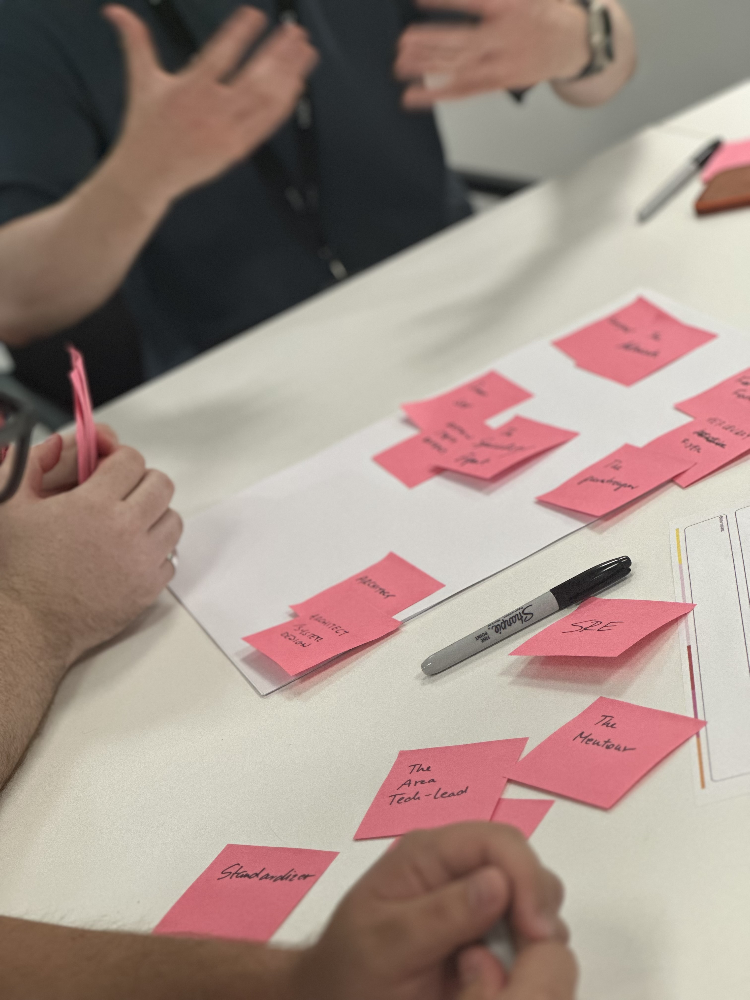
Product management is the practice that helps businesses navigate the rapidly changing world of market demands, and user needs when building software-enabled services. This section provides a framework that guides our thinking and actions throughout the various stages of product evolution.
A product is an entity that creates a specific value for a group of people, the customers, users and the organisation that develops and provides it. For Armakuni, a product is a software solution that solves a problem or provides a tangible benefit.
Unlike traditional software delivery approaches that view development as a series of projects with defined start and end dates, the product mindset emphasises continuous value delivery and long-term user satisfaction. With the product mindset, software is not just a one-time project but an ongoing undertaking evolving to meet changing user needs and market demands. Instead of focusing solely on project completion, the product mindset prioritises creating sustainable solutions that add value to users and the business throughout the product lifecycle. These sustainable solutions could be features that are continuously updated based on user feedback or a product roadmap that adapts to market changes.
An obvious question is, “Why is this way better than having a certainty of end dates, project plans and pre-agreed timelines?” The short answer is that the needs of users, the business, and the market inevitably change over time, causing the software to change too. Agreed project plans cannot anticipate the impact of future learnings. By taking a product approach, we focus on meeting the users’ needs, and by being data-informed, we are confident in our decisions, delivering value as those needs evolve. Reframing software delivery as an evolving product has many benefits over traditional static approaches.
Higher flexibility: We collaborate closely with stakeholders, respond swiftly to new learnings, set our destination, adjust our course, and remain flexible rather than tied to a rigid plan.
Lower costs: We iterate based on user and business insight, reducing the need for redevelopment and delivering long-term cost savings. Iteration also enables a competitive advantage, as our products remain relevant.
Higher quality: Product success is measured based on the value delivered to the user. The whole team focuses on generating value informed by data and user feedback.
At Armakuni, we understand that building and maintaining a product mindset and culture requires consistent intention and effort. The ‘Principles, Mindset and Tools’ section is a comprehensive guide that highlights the values and tools that will help along the product journey. It includes principles such as user-centricity and continuous improvement, mindset shifts like embracing change and learning from failures, and tools like user feedback platforms and agile methodologies. We recommend grasping the principles before proceeding to the tools. Use the principles to guide the decision-making process.
The Product Lifecycle section introduces a lean framework for understanding the different stages a product will go through in its lifetime. This strategic framework can help us set goals and adopt strategies and tools best suited for each stage, enabling us to make better decisions and stay ahead of the curve.
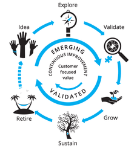
Depending on where your product is in its lifecycle, it will help inform the strategies you use to develop it. In this section, we describe the six stages of product development. Understanding each stage enables you to focus on the right activities for your users, the business, and the level of investment needed at each stage.
The six stages are:
During the idea stage, teams generate hypotheses using customer and market insights. After brainstorming several hypotheses, they select one to focus on. Teams review the chosen hypothesis for risky assumptions and brainstorm effective ways to test them.
In the Explore stage, teams conduct experiments to test their riskiest assumptions. This stage focuses on customer needs, pain points, and the “job to be done.” Teams gather valuable insights that will inform the development process through interviews, surveys, and prototype testing.
During the Validate stage, teams use the insights gathered from the Explore stage to develop a solution for customers, starting with a minimum viable version. The goal is to create a product that delivers value to customers in increments. Additionally, the solution development process tests aspects of the business model, including pricing, costs, and distribution channels.
After demonstrating traction in the previous stage, the team focuses on growing and scaling the product based on a validated business model. The main objectives during the growth stage are to increase customer numbers, revenues, and profits through targeted marketing, sales, and expansion efforts.
Over time, all products reach a level of maturity as markets become saturated, competitors enter the market, or technology changes. When this occurs, products enter the Sustain stage. During this stage, the focus shifts to sustaining revenues and profits while optimising operations and reducing costs.
Eventually, every product reaches the end of its lifecycle. During the Retire stage, the team ensures customers are not inconvenienced by implementing a plan to mitigate any adverse effects. The plan may include offering alternative products or services, providing ample notice, and assisting customers with transitioning away from the product.
The first three stages, idea, explore and validate, involve testing the validity of ideas to find product-market fit. The second three stages, grow, sustain, and retire, involve executing the business model and exploiting it efficiently until the product is ready to be retired.
We recommend reading “Lean Product Lifecycle” to learn more about the product lifecycle.
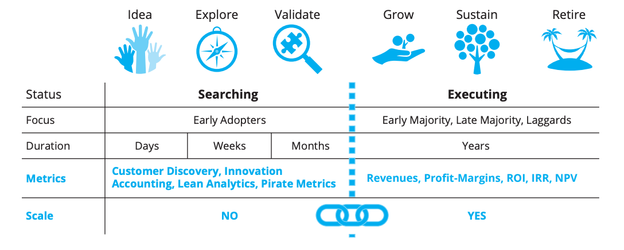
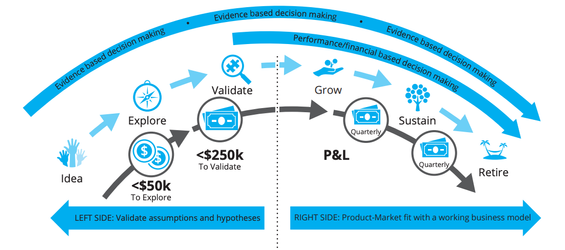
Our commitment to ‘Product as a Practice’ approach is paramount. Product practice centres on user experience (UX), business value (business), and technical feasibility (tech), and underscores the importance of these three key elements working in unison within a single delivery team. Collaboration across these domains is essential for creating successful products at pace. Here, you’ll find insights and strategies to help you integrate and balance these elements effectively.
Image credit: Martin Eriksson, from Product Management is a Team Sport
The Ak Way strives for shared principles and a shared mindset that fosters harmony across all disciplines, working together as a single unit. We start by understanding Principles and Mindset:
Principles provide a foundation for the delivery team’s daily activities and decision-making. They create a structured environment that enables us to be more consistent, effective, and aligned with our values and goals. These principles reflect best practices at Armakuni.
These principles, broken down into the what, how, and why, guide our practice when developing software. While these principles are universal, generating principles specific to your team and product may also be valuable. To explore this further, start with the Anatomy of Product Principles.
A product mindset embodies the best practices outlined in this manual, which have become the gold standard for working in the product industry. At its core, a product mindset means being user-centric. With current data and insight, ensuring a deep understanding of your users and their needs means you can authentically represent them, build products they will love to use, and ultimately deliver more value quickly.
Your mindset influences your approach to product development and management significantly. A growth mindset, characterised by a willingness to learn, adapt, and iterate, is essential for navigating the uncertainties and challenges inherent in product development. Focusing on continuous improvement and being open to feedback are hallmarks of the productive product management mindset we strive to achieve.
Vision and strategy are not just important; they are essential in product management. They provide direction, align efforts, guide decision-making, and motivate teams. A clear product vision sets a long-term goal and purpose, inspiring stakeholders and ensuring everyone is working towards the same objective. The strategy outlines the steps to achieve this vision, helping to prioritise tasks, manage resources, and maintain focus. Together, they differentiate the product in the market, address customer needs, and ensure continuous improvement, ultimately driving its success from inception to market leadership.
To support fast flow, we must ensure we have clarity and alignment. Martin Eriksson’s Decision Stack is a structured approach to decision-making that empowers product teams to make local decisions quickly and efficiently, utilising direction from company strategy and goals. A decision stack streamlines the decision-making process by providing a framework for evaluating options based on predefined criteria, reducing ambiguity and enabling teams to move forward with confidence. This approach ensures that decisions are aligned with the overall product strategy while supporting flexibility and autonomy at the team level.
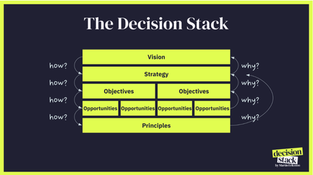
User-centricity emphasises the importance of understanding, empathising with, and designing for the end user throughout the product lifecycle.
User-centric thinking involves placing the user at the centre of the design process. By prioritising users’ needs, preferences, and experiences, product teams can create more intuitive, valuable, and impactful solutions. User-centric thinking goes beyond gathering user feedback. It requires actively involving users in the design and development process, ensuring their needs, preferences, and expectations are surfaced, prioritised, and met.
Understanding what we mean by a “user” is essential to becoming user-centric.
When considering a product, it is easy to confuse a user with related concepts, such as the client or the customer.
The client is the entity or organisation that purchases or commissions the product, often with specific business requirements and objectives.
The customer is the individual or entity that pays for the product or service. They may or may not be the same as the client.
The user is the individual who interacts directly with the product and may or may not represent a paying customer.
While each of these three kinds of people influences the product, we focus here specifically on the user because we want to design a product that meets the needs of every user who interacts with the system. A satisfied user will fuel product adoption, usage, and success. Conversely, many dissatisfied users will lead to a product’s decline.
To understand a user’s needs, behaviours, and preferences, you must engage directly with the user.
User research involves gathering insights into user needs, behaviours, and preferences through interviews, surveys, and observations.
User experience (UX) design focuses on creating intuitive, user-friendly interfaces and interactions that enhance the overall user experience. UX designers use principles of usability, accessibility, and human-computer interaction to design interfaces that are easy to use, visually appealing, and enjoyable for users.
Usability testing helps evaluate a product’s effectiveness and efficiency by observing how users interact with it. It can identify usability issues, pain points, and areas for improvement, enabling product teams to refine the product and iteratively enhance the user experience.
A successful product undergoes several cycles of design, implementation, and feedback. The user must be at the centre of each cycle, ensuring we don’t lose sight of what they need.
Being data-informed means using data to guide decision-making and drive product improvements. By leveraging data effectively, we can gain valuable insights into user behaviour, preferences, and needs, enabling us to create products that better meet user expectations and deliver more significant business value.
Data-informed decision-making means using data to inform decisions without allowing it to dictate decisions outright. While data is valuable for providing insights and guiding product direction, it’s essential to balance it with other factors, such as user feedback, market trends, the business context, experience, and goals. Data-informed decision-making allows teams to consider the bigger picture and make confident decisions aligned with user needs and business objectives.
Effective decision-making in product development requires a balance of qualitative and quantitative data. Quantitative data provides valuable insights into what is happening, user behaviour and product performance at scale. Qualitative data offers more profound insights into why by surfacing user needs, preferences, and motivations. By using both data types, teams can better understand their users and make more informed decisions.
Without evidence to inform decisions, all we have are assumptions. If we act on assumptions, we will likely waste time and not meet users’ needs; we must always turn our assumptions into hypotheses and test them. Teams should run experiments to gather the necessary insight when data or evidence is missing. By running experiments, product teams can fill in gaps in their data to make more informed decisions based on evidence rather than speculation or opinion. We must never forget that we are not our users, so we must not make product decisions based purely on our perspective.
Placing bets is a lightweight, flexible way to decide how to proceed with your product, strategy, and more. By definition, a bet is outcome-focused, supporting rapid learning and innovation. When we place a bet, we assume something will happen and then check in to see how it’s progressing.
A bet captures the interplay between assumptions, desired outcomes, experimentation, risk, and reward. By placing small bets with a short timeframe, we can gather information that helps us decide the best next step. Small bets can also clarify the odds for larger, future bets.
We must use our professional judgement and experience to interpret data and decide on the best subsequent action. Tuning into our judgement can help us identify areas that need further exploration and draw conclusions from information.
Be mindful of cognitive bias; it’s human nature to bring bias into our work. When using our judgement and interpreting data, we must mitigate against our bias to avoid detrimentally influencing a decision or action.
To mitigate bias, look for ways to challenge what you believe you see. Discuss your thoughts with others, surround yourself with a diverse group, and don’t be afraid to listen to dissenting views. You can also seek out people and information that challenge your opinions or assign someone on your team to play “devil’s advocate” for significant decisions. Constructive controversy will help here.
By combining data with professional judgment, teams can uncover valuable insights and opportunities for improvement.
By constantly seeking to understand why users behave the way they do and why specific outcomes occur, product teams can discover meaningful insights and opportunities for enhancement. Curiosity drives continuous learning and improvement, enabling product teams to stay ahead of user needs and market trends.
Being data-informed enables teams to make confident decisions based on evidence and insights rather than assumptions and opinions. Teams reduce uncertainty and make more confident decisions by leveraging data effectively, satisfied that their choices contain evidence and insights.
Successful product development hinges on the ability to iterate quickly and learn from each step of the process. This approach ensures that products are continuously improved and aligned with user needs and market demands.
In product development, experimentation is crucial. It involves testing hypotheses, gathering data, and gaining insights into user behaviour, preferences, and needs. By conducting various forms of tests, such as A/B testing, prototype testing, usability testing and user research, product teams can validate assumptions, identify areas for improvement, and make informed decisions.
We view failure as a learning opportunity. By embracing failure in a managed way, product teams can iterate quickly, identify issues early on, and adjust accordingly. This approach minimises risks, conserves resources, and contributes to delivering better products. As Thomas Edison said, “I have not failed. I’ve just found 10,000 ways that won’t work.” Failing fast means setting clear objectives, defining success metrics, and fostering a culture of experimentation.
Focus on delivering minor, incremental improvements rather than aiming for a fully featured product release. This approach allows product teams to quickly provide value to users, effectively gather feedback, and make necessary course corrections. Avoiding “Big Bang releases” reduces risks and surprises, enabling more responsive and adaptive development.
Involving users early and continuously in the development process ensures that products meet their needs and expectations. A real user interacting with live software produces the most accurate feedback for validating assumptions, identifying issues, and guiding product direction. By involving the whole delivery team in user research, you gain a comprehensive understanding of user feedback that covers usability, technical feasibility, and market relevance. This ongoing interaction between the delivery team and the users is vital for conducting informed experiments and leading to valuable decisions.
Product teams monitor user feedback, analytics, and market trends to inform them about their products’ performance. Continuously informed teams can respond swiftly to alterations in user needs, market conditions, and competitive pressures, ensuring that the product remains competitive and aligned with user expectations.
Product teams foster trust, encourage innovation, and achieve better user outcomes by adopting an open approach. Working in the open makes the product development process more transparent and collaborative, reducing certain risks and enabling everyone to share accountability for the product lifecycle.
Being open by design means intentionally designing processes, practices, and systems that are transparent and accessible to stakeholders. Incorporate openness into relevant aspects of the product development process, from decision-making to communication to documentation. Be intentional about the informational you share and how you share it, consider the user experience.
Making work visible makes product teams more effective by supporting collaboration and alignment. By visualising their work, product teams ensure that everyone clearly understands what it means for a product to go from the idea stage to being in the hands of the user. More importantly, making work visible can help us understand bottlenecks in the flow of ideas into development and getting the product into the hands of users. When working in the open, product teams can work together more effectively to find solutions and make course corrections when needed.
Working in the open with Psychological Safety fosters innovation by encouraging the sharing of ideas, feedback, and insights across the team and teams. When everyone has visibility into the work undertaken, they can contribute ideas, offer feedback, and collaborate on solutions. By fostering a culture of openness and collaboration, product teams can tap into the collective knowledge and creativity of the entire team, driving innovation and creativity.
Product teams that work openly achieve better user outcomes and deliver more successful products. Transparency, collaboration, and trust enable teams to work more effectively, make better decisions, and respond more quickly to user needs and feedback, leading to positive outcomes.
Empowered teams are at the heart of successful software development. By empowering teams to make decisions, work autonomously, and take ownership of their work, The Ak Way fosters a culture of innovation, collaboration, and continuous improvement.
A product requires a long-lived cross-functional team of people closest to it or the problem it addresses. The individuals within the team do not have to stay there for a long time, to be long lived the team’s culture, purpose and knowledge is long lived, the appropriate mechanisms are needed to enable that. This team therefore has the knowledge, expertise, and context to make informed decisions quickly and effectively. Empowering core teams to rapidly create user and business aligned solutions ensures product success. As the product progresses through the lifecycle stages, the team must bring appropriate people to collaborate with at the relevant point(s).
Empowered teams are trusted to make decisions, act independently, and take ownership of their work. With support and minimal oversight, they’re able to respond more creatively and effectively to user needs. This autonomy fosters innovation and leads to stronger outcomes for both the product and the organisation.
It also builds happier, more motivated teams. When people feel trusted and responsible for their work, they develop a more profound sense of pride and commitment. This results in higher morale, greater productivity, and more meaningful contributions to shared success.
The role of leadership is to support, enable, and unblock work for the product teams. Leaders provide experience-based insight, coaching, and guidance to help teams succeed. Teams and leaders must earn and build trust so that anti-patterns such as micromanagement or false reassurance around big upfront design, etc., don’t occur.
Psychological safety is essential for high-performing teams to deliver results. It requires those in leadership positions to cultivate a safe environment and for everyone to hold themselves to account for their actions and behaviours. Building and maintaining a psychologically safe culture takes time and effort. The return is happier, more engaged, and motivated teams that perform at a higher level. Teams make better decisions, embrace continuous learning as the norm, and enhance innovation, creativity, and resilience.
Without psychological safety, there are negative impacts on employee well-being, including stress, burnout, attrition, and the organisation’s overall performance.
Defining good, measurable outcomes for our work is crucial for understanding the value we’re trying to deliver. By setting clear objectives, we can better track progress and achieve success.
It’s helpful to note the difference between outputs and outcomes in product management. Outputs are the tangible features or deliverables, such as new software functionalities. Outcomes are the broader impacts or benefits these outputs create, typically a behaviour change such as increased user satisfaction and higher engagement rates.
Outcomes describe what we want to achieve and what success looks like. They should be something our users (internal or external) and the business would recognise as valuable.
Outcomes should be agreed upon when we set the direction for a new undertaking, change direction, or recalibrate. We can also revisit them when we plan a new feature.
Setting outcomes is a team sport. It should involve the delivery team, people outside the team with whom they will work or collaborate with closely, and the work’s leaders and sponsors.
A goal describes the broad direction towards achieving an outcome:
“Cater for a memorable birthday party.”
An objective makes goals specific, measurable and time-bound:
“Sandwiches for 20 people that everyone can enjoy”
An output is a defined deliverable that (may) achieve an objective, outcome or goal:
“10 cheese sandwiches and 10 ham sandwiches”
A desired outcome succinctly describes the desired change or impact - it’s the benefit derived from achieving a goal:
“Happy memories and full stomachs”
Goal
Objective
Output
Outcome
Cater for a memorable birthday party
Sandwiches for 20 people that everyone can enjoy
Sandwiches for different dietary requirements
Happy memories
Full stomachs
Credit: Jamie Arnold and Emily Webber
A well-defined outcome provides a focal point for the team and serves as a guiding light for their efforts. It helps the team quickly identify and conserve their time and energy for the most critical work.
Here is a helpful guide to defining effective and measurable outcomes:
Objectives and Key Results (OKRs) are a simple, popular way of thinking about outcomes, the path to achieving them and how to measure them.
When setting metrics, it’s essential to consider lagging and leading indicators.
The leading indicators you select depend on your business model, type of product, and product goals. Teams should use both types of indicators when defining performance metrics. For example, in an online streaming platform aiming to increase subscription renewals:
A leading indicator example could be the “Number of User Engagement Activities,” which measures user engagement through activities such as video views and interactions. This indicator provides early insight into user satisfaction and potential subscription renewals.
Conversely, a lagging indicator such as the “Subscription Renewal Rate” measures the percentage of subscribers renewing their subscriptions, offering insight into the platform’s ability to retain subscribers over time.
By tracking these indicators, the product team can assess the effectiveness of content, features, and retention strategies, making informed decisions to improve subscriber retention and project success.
Objectives (such as OKRs) can cascade down from the top of an organisation and help create alignment. However, they are less likely to succeed if the team delivering the objective is not engaged in setting the goals or measures. The team will not have a complete and shared understanding of the rationale and will not feel as invested or motivated.
Teams defining their outcomes without input from leadership can result in them going in different directions, reducing organisational coherence.
Using OKRs as the only measure creates a restricted view. It’s best to use them to track time-bound initiatives and innovation work in conjunction with longer-lived KPIs to understand their impact on the broader business metrics and goals.
The Product-Market Fit framework is an actionable model designed to iteratively develop a minimum viable product (MVP) that effectively satisfies the underserved needs of its target customers. As the name suggests, this framework ensures that the product fits the identified market well.
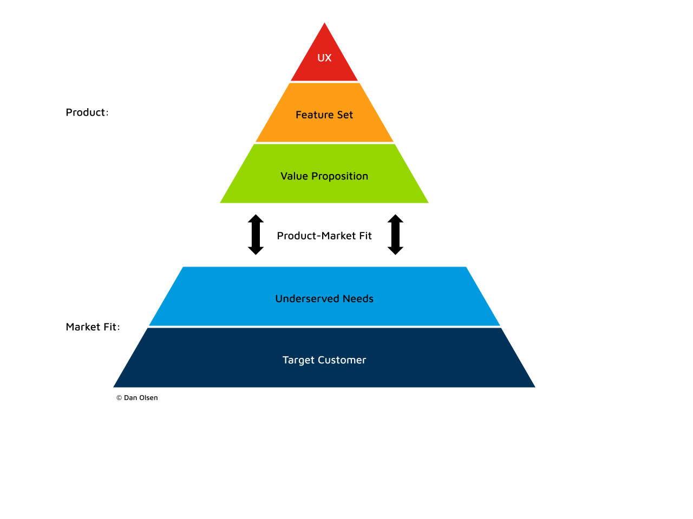
This framework helps you to converge on an MVP by testing different ideas with your target customers. Therefore, this is most useful in the Idea, Explore, and Validate stages of the Product development lifecycle.
The framework provides six steps to help you achieve product-market fit. We use the word “achieve” because we want to measure whether there is a strong alignment between a product’s value proposition and the underserved needs of target customers. The measures need to indicate that customers or users are enthusiastically buying, using, and sharing their experiences with your product with others.
Begin by thoroughly understanding your target market. Ask questions such as, “Who might buy this product?” and “Will it meet their needs?” Conduct market research and use segmentation to identify niche requirements, exploring questions like, “What are their pain points, needs, and preferences?” Create user personas representing your ideal audience to help the team empathise with the target users. This approach aids in visualising products that would be valuable for specific consumer types.
Find more resources on User Research.
Underserved needs refer to situations where users find their current tools inadequate for fully meeting their requirements. In this step, engage with target customers to understand their dissatisfaction and explore how your product can address these gaps. Ask questions like, “What are you unhappy with?” and “What changes would make a difference?” Conduct one-on-one sessions using MVP prototypes, screen mockups, or competitor products if available. Closely observe customer interactions and ask open-ended questions to gain deeper insights.
Defining your product’s value proposition involves determining how your product will better meet customer needs than alternatives. This process includes narrowing down the potential needs your product could address to those with the maximum positive impact. Carefully select the unique features that will differentiate your product from competitors and outperform them so that customers will use it and tell others about it.
Try this Value Proposition Canvas.
After understanding the differentiated value, the next step is to specify the minimum and unique feature set required to get the product into the hands of target customers as quickly as possible.
“Minimum” is the key term here. We want to avoid spending excessive time building a product only to discover later that customers don’t like it. The goal is to develop simply enough to create significant value for the target customer. Customers will provide feedback if something essential is missing, allowing you to iterate quickly and make necessary improvements.
Iterate and experiment to assess what works for your target users.
At this stage, we aim to produce a version of the product that gathers enough feedback from customers before the next iteration. This prototype can vary in its level of completion. Initially, this might involve using medium-fidelity wireframes or high-fidelity mockups to demonstrate user experience (UX) design to customers. Modern UX tools can make these mockups interactive, simulating a “real” experience with static data.
However, ensuring a smooth transition from wireframes to a working software MVP is crucial. In high-pressure projects with tight deadlines, there’s a risk of getting stuck in a cycle of repeated “sign off in Figma” stages without progressing to a functional MVP. Focusing on quickly developing live, working versions for customer testing is essential. Once we have working software, using Figma-style mockups is no longer required, as implementing design ideas directly in releasable software generates faster feedback.
Collaboration between technology and UX specialists within the team is vital. They should work together to determine the fastest way to implement the MVP feature set and ensure continuous, incremental improvements based on real user feedback.
Find out more about User Experience Design and Testing techniques
Gathering consumer feedback is a crucial step toward achieving product-market fit. Allowing consumers to test the product helps developers understand what works and what doesn’t. To ensure valuable feedback, it’s essential to involve the target customers. Use a “screener” survey to verify that participants match the desired target customer profile, avoiding demands that might steer the product in the wrong direction.
Testing the MVP is most effective in a one-on-one setting with each customer. Carefully observe what the customer says and does as they interact with the MVP. Avoid leading or closed questions, such as “Wasn’t this easy to do?” or “Did you like feature X?”. Instead, use open-ended questions like “What did you think of X?” to encourage customers to share their honest thoughts and experiences.
Conduct these tests in batches of 5-8 participants. This sample size is large enough to identify issues with the product while minimising repetitive feedback. Analysing these patterns will help prioritise concerns for the next iteration, ensuring continuous improvement and alignment with customer needs.
Direct customer research provides qualitative data. For Products that have reached a stage where we have active customers or are in beta release stages, we can also generate quantitative data to guide the decision-making process. For example, consider measuring things like:
Each iteration of these steps should move the MVP closer to achieving more positive and fewer negative customer responses. Analysing patterns and feedback will guide the product’s evolution, ensuring it meets customer needs more effectively with each cycle.
Once the product achieves product-market fit, the focus should shift to maintaining this fit for sustained success. Maintaining fit requires the team to continuously monitor customer needs and emerging trends, ensuring the product remains aligned and relevant. It’s also important to continue fostering a team culture built on principles of customer satisfaction and continuous improvement.
A product vision is a clear and compelling description of your product’s future aspirations. It outlines the product’s purpose and desired outcomes. A well-defined product vision guides the entire product team, aligning everyone around a shared ambition. A successful vision statement should be concise, inspirational and memorable.
A product strategy is a high-level plan that helps you realise your vision and succeed. By answering questions about the target user group, user needs, value proposition, differentiation and business goals it aligns to, a product strategy informs a roadmap for the product’s development and success.
Having a vision and strategy in the initial Idea phase helps align efforts from the start to the Explore and Validate stages. Documenting the vision early on aids in making significant product-related decisions, reminding us of the ultimate goal and filtering out distracting ideas. The initial strategy provides direction for other frameworks used in the early stages, such as Product-Market fit or Product Discovery. As we validate and learn through these tools, we iteratively refine the strategy, ensuring it remains relevant and compelling.
Tools like Product Vision Board, by Roman Pichler, provide a lightweight structure for capturing both the vision and the strategy:
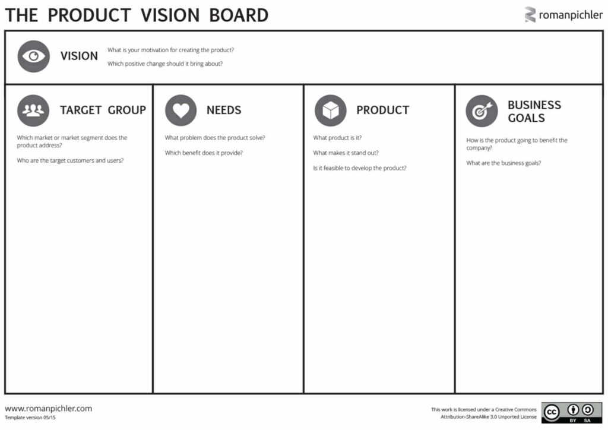
This can be collaborated on in a workshop between the product team, the leadership team and any interested parties, such as client leadership, if the product is for a client. As can be seen in the picture, it has five areas to fill out:
This section should describe the target user groups that will benefit from the product and clarify who the “users” and “customers” are. Attempting to capture too many unrelated target segments under one umbrella can quickly result in the product being unable to satisfy the needs of any single group, and it will likely not result in a successful product. It’s best to group users by their needs or goals, ask why are they using this product, what are they aiming to achieve? Once you have identified the groups prioritise them.
In the Needs section, we clearly define the primary user problems or opportunities the product aims to solve and answer key questions such as, “Why would someone pay for this product?” Understanding customer needs involves delving into the behaviours and motivations of the target user. When completing this section, it’s crucial to distinguish customer needs from product features. The “what” from the needs will guide the “how” in the form of a feature set that responds to those needs.
Here, we summarise the product’s critical attributes for its success. These essential features address the users’ needs and differentiate your product. It’s important to avoid making a long list of all potential features; we can add the finer details during the building phase. Focus on selecting up to five main ideas that will effectively meet the users’ needs and set the product apart - we want headlines not details at this stage.
Business goals articulate why the organisation should invest in this product. The goals must illustrate the value that can be generated for the business, and how this product can contribute to achieving existing goals within the company strategy. For instance, instead of stating, “Make more money,” a more precise goal would be “Increase revenue by introducing a subscription model.”
It can be helpful to leave the creation of the vision to last and work out the other sections first. The vision brings all the threads together into a compelling statement. Creating the statement after working out the strategy creates a greater sense of ownership within the team who have contributed to it, which leads to stronger motivation to help the product succeed.
A product vision must be inspirational, concise, memorable, easy to repeat, and, most importantly, supported by everyone in the product team, including key business stakeholders. A well-defined product vision should guide strategic decision-making, rally stakeholders, and give the entire product team an aligned sense of purpose.
Take LinkedIn’s vision, for example, which says, “Create economic opportunity for every member of the global workforce”. It clearly outlines who its product is for (global workforce) and the value it aims to provide (economic opportunity).
It’s important not to describe the solution in the vision statement, the vision may be unattainable, as it’s an ambition, a moonshot. The solution is likely to evolve over time as new insight is gained. You may find the vision statement already exists, if so work through the strategy sections and then review the vision statement and refine it if needed.
See: https://www.romanpichler.com/blog/tips-for-writing-compelling-product-vision/
Objectives and Key Results (OKRs) is a goal-setting framework used by teams and organisations to define and track objectives and their outcomes. They are a great way to track time-bound change projects and innovation work, such as product development. It’s helpful to use OKRs in conjunction with KPIs (Key Performance Indicators) which track the long-lived performance metrics of a service or business.
Objectives are the ambitious, qualitative goals that an organisation or team aims to achieve. They should be ambitious, inspire, and be qualitative.
Key Results are specific, measurable, and quantifiable outcomes that indicate progress towards the objective.
Creating effective OKRs – and using them sparingly – can:
Good objectives must be:
Key results must be:
If you achieve 100% of your KRs, they are too easy, 50% means it’s too hard and not delivering enough. You should strive to achieve 70%, this will deliver value, whilst stretching the team and what’s possible.
You must be able to continuously measure and verify your key results. And you need to know where you’re starting, so you ideally need to have baseline metrics. Or at least relatable metrics to compare to.
Objective: Increase Geographic Coverage of Drivers
Key results:
Objective: Increase Average Watch-time Per User
Key results:
OKRs are not a silver bullet. They are a tool, and rigidly following any process won’t guarantee meaningful outcomes.
Effective stakeholder engagement is essential for successful product management. It is about enabling stakeholders to contribute meaningfully, transforming them into partners rather than a force that is against you. This is a perpetual need in Product and Engineering, and it’s in your gift to cultivate this mindset and behaviour. Effective stakeholder engagement is a thread that weaves in and around every interaction, from the tools and methods we use to the human skills we exercise.
As we navigate the complex landscape of Product Engineering and strive for the best outcomes, these five principles help unlock effective stakeholder engagement:
Effective engagement begins with understanding the people you are working with. Map your stakeholders to understand their roles, interests, and influence. A classic method is to categorise them to help focus your engagement efforts:
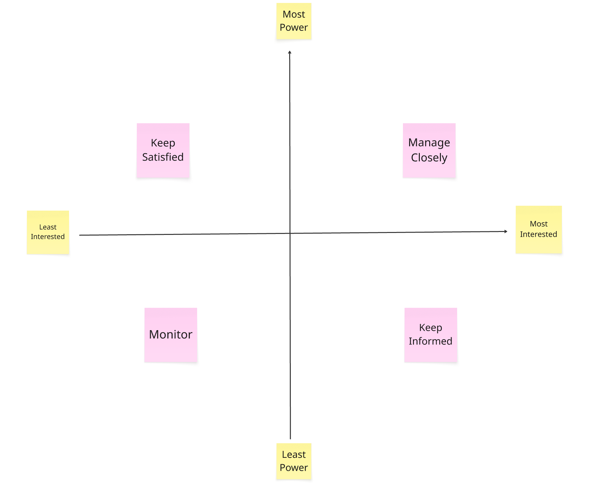
Beyond mapping and engagement planning, identify your allies and champions. These are the people who are invested in your product’s success and are willing to advocate for your work, identify those you can convert into champions too.
Building on these relationships can help you navigate challenges and build momentum. By understanding who your stakeholders are and what motivates them, you can tailor your approach to meet their needs, and get the best from them and their contributions.
Stakeholder engagement is a fundamentally human-centric practice. To build a robust foundation, cultivate connections and foster compassion, which means understanding stakeholders as individuals, beyond their roles. Show genuine interest in their motivations and concerns to build the trust that is the foundation of effective teamwork, as described in The Five Dysfunctions of the Team.
By framing stakeholders as partners rather than thinking of them as obstacles, you can move from transactional interactions to true partnership. This trust will be invaluable when you need to make tough decisions or navigate conflicting priorities. When stakeholders feel heard and respected, they are more likely to support your vision and contribute positively.
Enable your stakeholder to understand users and their needs with compassion. Bring stakeholders close to users, involve them directly in user research and findings playbacks. Connect Stakeholders with the challenges and opportunities, provide context to support them in making meaningful contributions. Also consider the intangibles, pay attention to the subtleties of communication, influence and negotiation to supercharge your stakeholder engagement powers. Getting More is a valuable guide to honing negotiation skills.
True collaboration means ‘doing with, not to’. Empower your core team while ensuring your stakeholders feel like an integral part of the journey. When you collaborate, you are not dictating the path forward but rather co-creating it. This requires fostering psychological safety, where all parties feel safe to belong, learn, contribute and challenge without fear of negative repercussions. This includes everyone being accountable for our actions and behaviours.
Be curious, show interest in stakeholders’ perspectives, explore their ideas with an open mind and a willingness to understand their viewpoint. Agree on their role, within the work, for shared clarity and to avoid misunderstandings. Use the Team Onion model to set up the core team as decision-makers, and stakeholders as Collaborators or Supporters, ensure there is buy-in to act in the agreed way. Another helpful framing is to position stakeholders as part of the Extended Team, as described by Roman Pichler.
It’s important to practice compassionate boundaries. This means being empathetic to your stakeholders’ needs while also advocating for your and your team’s needs.
Transparency and clear communication are vital for keeping stakeholders aligned and engaged. Be intentional about your communication by working in the open by design and using ‘clean language’ to foster understanding. Make agreements, rather than set expectations, to enable all parties to move forward together with the least friction. For example, agree on who can deputise for a stakeholder if they are unavailable and what happens if they miss an opportunity for input in the regular cadence of connection points.
Build and maintain a consistent cadence for engagement, create regular opportunities for stakeholders to contribute, make participation easy and predictable. To avoid becoming a bottleneck of information, make information self-serve where possible. Making Work Visible enables stakeholders to see how their feedback is being incorporated and understand the rationale behind decisions.
Finally, guide their contributions by clearly articulating what you need from them, whether it’s input, feedback, or a decision. Provide regular feedback on how their contributions are being used and the impact they are making. Role model desired behaviours, demonstrating the collaboration and communication you find most valuable.
Effective engagement is an ongoing effort that requires accountability. Always be data-informed in your decision-making. Use metrics, user feedback and market research to validate your product strategy, priorities and decisions. This approach builds credibility and helps you make a compelling case for your decisions.
Finally, hold yourself accountable for stakeholder engagement, you might want to set yourself goals, to help you focus on areas of improvement. Tracking your progress and tune into how stakeholders are engaging with you and the work. Be willing to adjust your approach based on what you learn. By being accountable, you demonstrate to your stakeholders that you are committed to delivering results and that their input is an essential part of that journey.
Conceived primarily by Gojko Adzic, Impact Mapping is a collaborative and fast strategic planning technique that eliminates waste during the product development process by helping teams align their activities with the objectives of the business in which they operate.
By clearly communicating the actors within the team’s sphere of influence and their respective behaviours the team believe they could influence (the impacts), Impact Maps enable teams to discuss the relative merits of pursuing each Impact, facilitating effective prioritisation. This process highlights an important set of hypotheses - “if actor X did more/less of behaviour Y, then our progress towards goal Z will be furthered.”
Furthermore, Impact Maps link each proposed deliverable back to an impact, surfacing yet another set of hypotheses - “by delivering X, we hypothesise that actor Y will change behaviour Z.”
To learn more about Impact Maps and how they could help your team make much more effective roadmap decisions, visit the official Impact Mapping website or take a look at the go-to book on the subject.
Our delivery teams are guided by a range of methodologies and practices, from an agile mindset to continuous integration and continuous delivery. These approaches support efficiency, collaboration, and high-quality software delivery.
A team’s primary purpose is to deliver value to the end-user, typically through the creation of software. There are multiple ways to articulate value, including:
We build on several industry-leading methodologies and practices to achieve a fast flow of value:
Aligned with agile methods, we keep processes and tools lightweight and adaptable. If particular processes or tools impede the flow of value, they should be removed or adapted. The delivery team has the autonomy to adjust processes and tools to fulfil their responsibilities.
We judge progress primarily by the availability of working software in a production (or production-like) environment - rather than relying on reports, task lists or burn-down charts. Working software means software delivered into an environment where a customer uses (or tests it in real-world conditions). Progress reports other than working software should be considered of secondary importance.
Teams create all software by working closely with the customer. An end-user should sit with the team daily, reviewing progress and participating in defining the next steps of development. Where this is not feasible, we strive for a minimum of weekly touchpoints for customer collaboration with the team. To support cross-functional work, the whole team must work with the customer - not just a User Researcher or Product Manager. This approach allows the team to empathise with the users’ needs and desires, empowering them to build and deliver with that in mind.
Rather than waiting for a significant upfront design phase, which often misses crucial aspects of the implementation, we start projects without expecting the scope or definition of the product to be fully understood. We identify and prioritise the most critical use case, user journey, or story to implement. We implement this to completion. Only then do we consider the next priority. We improve/expand upon already delivered functionality every time we start a new iteration. This approach enables us to adapt to changes when requirements evolve due to user feedback or a deeper understanding of user needs.
All engagements must start with an Inception. This approach helps align the team and stakeholders around the scope and expectations. The objective is to understand the organisational context better and produce a prioritised backlog, so the team has everything they need to begin delivering immediately.
We recommend that you dedicate at least an entire day to this process, though depending on the complexity of the work Inceptions can span multiple days. The inception should set the stage for the next two or three months of development. After that period, be prepared to re-incept and re-align scope, expectations, and direction.
The “agile” and “lean” families of methodologies have many different approaches. We recommend starting with the list below. The team should continuously adapt this list based on findings from retrospectives.
Strong communication underpins reliance on individuals and interactions, so it is essential to have the right tools to support effective communication. Avoid tools that do not facilitate team autonomy, as they can undermine the work’s success.
Every team member should either be co-located or have access to a communication tool such as Slack or Teams. The tool must enable at least the following:
Store documentation of designs and decisions in a location accessible to all team members. If desired, maintain architecture decision records (ADRs) in source control. The tool must enable at least the following:
The team should collaborate continuously through pair programming (or sometimes mob programming). It may also be helpful to have designated daily meetings. Daily meetings, sometimes referred to as ‘stand up’, may support the following:
The team should have a shared space to communicate planned and ongoing activities. This space can be a conventional Team board, or if the team is comfortable trying new ideas, they can explore tree-structured dependency diagrams (like shared mind maps) or event modelling to slice a system into a set of deliverable products collaboratively.
A team must deliver working software to the production (or production-like) environment as soon as possible. Ideally, a team should deliver software into production during the first week of development. This approach is called the Walking Skeleton.
We recommend the following practices to achieve working software delivered to production:
Test in Production is a technique which uses software deployed to a production environment as the location for acceptance testing. We prefer it over the traditional approach of using a distinct QA/UAT environment. Use a tenancy model to allow test tenants for test isolation where necessary.
We fully automate the software deployment process when deploying it into production. We achieve this through a widespread understanding of CI/CD methods, which are well-established as supporting safe and reliable software deployment in highly regulated environments.
Automated acceptance tests should gate all software, replacing manual testing before deployment to production. Note that some manual testing may still be necessary in production, but this happens after deployment. QA engineers may design the automated acceptance suite, although developers should implement the tests themselves.
Create and configure all environments using Infrastructure as Code (IaC). This approach is vital for supporting the fast flow of working software into production. To achieve this, use tools such as Terraform, CloudFormation, or Bicep.
The team should regularly rehearse the removal and regeneration of the production environment to ensure the IaC code meets the requirements. This technique is crucial during the early delivery stages.
The software in production should produce insights about usage patterns to inform experimentation and decision-making about the product. Metrics should be both technical and business-facing.
You must involve customers in your daily work. Sometimes, customers are unavailable or unwilling to work with a team. In this situation, we recommend appointing an XP-style Customer role to champion the customer’s needs and desires. When daily collaboration isn’t possible, use Iteration planning with the customer to prioritise the most crucial functionality to implement.
Tools like Figma are a powerful way to iterate on user interface ideas quickly. However, it is essential to note that using these tools can delay the implementation of UI within Working Software. Teams should limit the use of design tools to quickly explore initial thoughts or sketches and work to convert the output directly into working software. At no point should the team claim delivery of value to the user based solely on static designs or wireframes.
We recommend using “Sprint Demos”, borrowed from the Scrum methodology. These meetings allow teams to demonstrate the value they deliver to stakeholders and customers and encourage knowledge sharing and a shared context across the team. Ideally, the team will work with customers daily, and regular organic discussions and demonstrations may replace these meetings.
When iterating quickly with users, capturing the core functionality in an abstract form is essential. The primary reason is to explain the reasoning for design decisions. These artefacts will prove valuable for communication within the team and between stakeholders and the team. However, it is vital to keep the primary measure of delivery as working software rather than “offline” artefacts like these.
An Information Radiator is a practice that makes a team’s work and status immediately visible to stakeholders and other teams. A team is not required to show their “internal workings” (or inner game) to those outside it. We empower teams to work in whatever way serves them best, with complete autonomy. Teams earn autonomy by proactively broadcasting their progress to those outside the team, making it available without request. (See https://www.agilealliance.org/glossary/information-radiators/)
The team must be able to pivot quickly to meet emerging needs and priorities, including adjusting team working practices and delivery goals. Below are a couple of practices that help with this.
Teams should hold a retrospective meeting at the end of each delivery iteration. Retrospectives allow the team to articulate necessary changes to how they are working. To ensure these meetings are helpful, they must have clear actions, and the team must make time to implement any improvements to their system of work. No part of the team’s adopted “methodology” should be seen as fixed. Meetings/processes/working practices - these should all be available for the team to adjust as they see fit, in line with delivering on the user or customer needs.
Creating detailed plans containing a long list of features and hours spent estimating effort creates a false sense of certainty. This creates waste, as teams invest time and effort into work that may not go live for months—or ever. The investment of time creates a feeling of attachment to the long backlog of work or an agreed-upon list of milestones and can prevent teams from adapting to new learnings and changing direction.
Prioritising the most valuable features removes the need for backlogs and estimates. If a “backlog” is maintained, it should be considered a casual list of potential work instead of a rigid delivery commitment for weeks or months. At the start of each iteration, the team, together with the Customer, should choose the subsequent most important functionality to implement.
An Inception sets the stage for successful delivery. Instead of rushing straight into the work, the team pauses to make sure they’re aligned on the why, what, and how.
The benefits:
The investment of 1 - 2 days in an inception pays back many times over during delivery.
Inceptions usually run over 1–2 days. Good preparation makes a big difference.
Choose facilitators: Ideally a pair or trio, with at least one experienced Inception facilitator. Share or alternate roles.
Invite the right people:
Share the full agenda and, if needed, introductory material so everyone knows why this workshop is important.
Allocate sufficient time: Keep activities time-boxed and build in breaks to maintain focus and energy.
Gather materials:
Pre-work: Collect information ahead of time (e.g. organisational North Star, high-level goals, initial stakeholders).
Bring the right mix of people, including:
If the full set isn’t possible, ensure at least a few people have enough domain knowledge to give context.
A well-set-up Inception feels seamless, giving participants space to focus on thinking and collaborating rather than logistics.
Start the Inception by building connections and grounding everyone in the purpose of the workshop.
Duration: 5-10 minutes
Once all the attendees have checked in, the facilitator may start the first session by replaying all or part of the introductory material sent in meeting invites about the role of an inception and the agenda of the inception day. This can be followed by an optional ice-breaker to get people talking and involved with the meeting. If this is taking place remotely, we suggest all cameras on to help keep everyone engaged, unless there is a reason not to.
Duration: 30 minutes, depending on the number of attendees
The first activity is for people to introduce themselves by filling in sticky notes. This should include:
Once filled in, give people space to share what they’ve written/typed.
Speak with a senior stakeholder to complete this ahead of the session. Pre-populate this section of the whiteboard for this activity before the workshop.
If the stakeholders don’t already have one prepared, then you can help them define one by asking them:
Duration: 10 minutes
Review the organisational North Star with the attendees. Discuss how it relates to the current engagement.
Speak with the Product Manager / Senior Stakeholder to think about what the ‘North Star’ is for the current engagement. This doesn’t need to be pre-populated on the board, as we want to write this in the session as that process is what will help us to produce the ideas that align us with the north star.
Duration: 35 minutes
Start by writing the engagement north star on the board during this stage. Allow opportunity to the senior stakeholder(s) to briefly talk about what it is and why it is the north star.
Allow the attendees to come up with 3 key things we need to do in order to align with our north star.
Discuss and agree on the key things. Record these as a reminder that the team can reflect on when they’re making decisions that can affect the goals or the scope, or at the next re-inception.
Together, you devise a North Star, which helps to guide delivery efforts and provides a basis from which the goals can be defined.
A North Star can be:
Duration: 30 minutes
Add individuals, teams, and organisations who are the users of what we’re creating to the board. This will be anyone who interacts with the system in any way, and not just the customers. Include internal and external users of the system (e.g. also include back-office or interested stakeholders if there are reports to be generated).
Group the actors when they will have the same expectation or deliverable from this team.
Refine the actors to fewer than 10 in total.
The actors we end up with will be the subjects of the stories we create, so make sure to have an appropriate range.
After this session add a short break - 15 minutes
Duration: 75 minutes
Goal: It’s a priority. We’ll achieve it this iteration.
Non-Goal: It’s valuable, but we intentionally won’t do it this iteration.
Anti-Goal: It’s not valuable. We actively don’t want to do this.
Landing Zone: A place on the board to capture all goals from the attendees before classifying it into one of the Goals, Non-Goals and Anti-Goals.
Prepare the Goals section of the whiteboard to have a “Landing Zone” and a “Classification zone”. Classification zone must have 3 areas - one each for Goals, Non-goals and Anti-goals. An example is below:
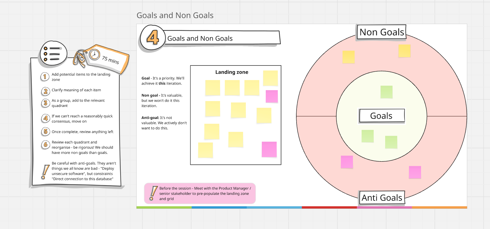
Meet with the Product manager / Senior stakeholder to capture some of the high-level goals and use this to pre-fill the Landing zone.
Introduce the concept of Goals, Non-Goals, Anti-goals to the attendees.
Give time to all attendees to add potential items to the landing zone.
Clarify the meaning of each item.
As a group, add to the relevant area in the Classification zone. As this part can become hard to get consensus on, and we want to keep to the time allocated, be mindful of how long you are spending on classifying each item. Perhaps set a time limit and if a reasonably quick consensus can’t be reached, then move on.
Once complete, review anything left.
Review each section and reorganise - be rigorous! We should have more non goals than goals, so don’t be afraid to reclassify goals into the non-goals category if they do not feel achievable within this iteration.
Stakeholder: In this exercise a stakeholder is any organisations, teams and individuals outside of the delivery team for this engagement, that have a level of interest in this engagement and a level of power to influence the delivery.
Stakeholder mapping: This exercise helps us visualise all the interested parties on a 2x2 grid (the stakeholder map) to make it explicit to the attendees how they would manage each of these stakeholder’s expectations during the course of the each phase of the engagement.
Landing zone: Similar to the previous activity, we’ll use a landing zone to place names of stakeholders before placing them on the stakeholder map.
Time Needed: 30 minutes
Introduce the activity to the attendees by sharing definitions above. ie, ask the attendees to think of all the organisations, teams and individuals who have an interest in the outcomes of the engagement and who have any influence on the engagement goals or outputs.
Add potential stakeholders to the landing zone - many will come from the actors activity.
Add full names and job titles for clarity where possible.
Try to deconstruct organisations into teams, and teams into individuals where you can.
Place each stakeholder onto the map (use illustration below as example) according to the following definitions:
Based on the quadrant, the team will agree to manage expectations and establish channels suitable for each quadrant (as shown in the picture below)
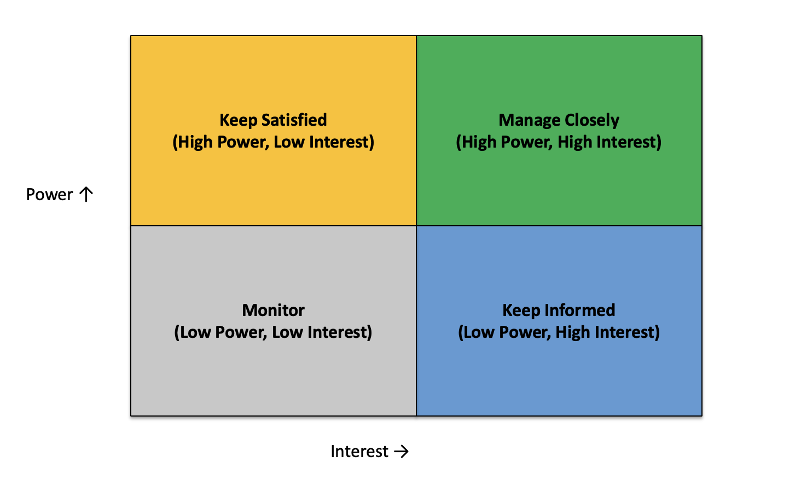
Risks: These are foreseeable risks that may impact the work such that the team are unable to deliver on their work. These may be internal risks, like a lack of required expertise, or external risks, such as a dependency on other teams for a component that you depend on.
Mitigations: How you intend to address these risks. These may be steps that you can take right at the start or when the risks become apparent.
Prepare a section on the whiteboard with 2 columns with titles “Risks” and “Mitigations”.
Time Needed: 30 minutes
Start by introducing the activity and definitions to the attendees.
Add risks in the appropriate column, and colour appropriately depending on their likelihood and impact. It is preferable for the attendees to write these in private to not influence others and allowing different perspectives on risk to surface. For in person meetings, this can be done by asking the attendees to only add the stickies to the board after allotted time has passed. Some online tools provide a “private mode” to achieve the same effect.
Group the risks, discussing any that may not be clear to everyone.
Start a voting session. You can place multiple votes on a single risk if it’s of high importance to you.
For the top 3 risks, add mitigations as a group to the column on the right.
After this session take a lunch break - 45 minutes
Metrics and Measurements: These are indicators that the team’s work will impact during the current phase.
Prepare a section on the whiteboard with 4 columns with titles:
Here is an example of how it can be structured alongside examples to guide participants:
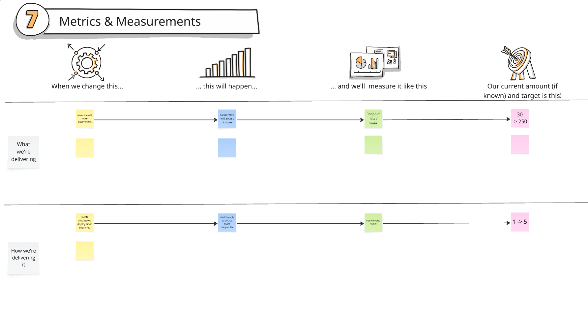
Time Needed: 30 minutes
Explain the concept to the participants.
Start by placing an item (e.g. build a dashboard for users) into the first column, likely inspired by the goals decided earlier in the activity.
Populate the second column, and ask the attendees to think of what will change as a result of working on that item (e.g. users can see the information on their own and no longer need to call the call-centres).
Populate the third column, by asking the attendees, how can we measure the change? (e.g. calls received at call-centre per week).
Populate the last column with current numbers for the specified metric and the desired change.
Note: Ideally we want metrics that we can start measuring right away so that we have as much data as possible.
Note: Don’t just consider what may increase or decrease. It is also valuable to think of how behaviours, patterns or time metrics (e.g. cycle time, lead time) will change.
Time Needed: 15 minutes
As a group, build the first, high level view of the architecture.
Add on any data flows and boundaries.
Add on technologies we’ll likely use, and highlight areas of uncertainty.
Note: Keep this activity within the short time-box, as this is not about doing the final design. We need just enough to start discovering, then let the eventual architecture emerge when the work begins.
Short break - 15 minutes
(User) Story: An artefact capturing a need of a user or an actor from the product. This will typically follow the structure:
“As an {actor type}, I want {a feature from the product}, So that {I can achieve an outcome}”
Epic: A group of related stories that can fulfil a goal. A goal may be fulfilled by one or more epics.
Story mapping: An activity to translate goals into the set of epics that will fulfil it.
Prepare the “Story Mapping Board” section on the whiteboard with this layout
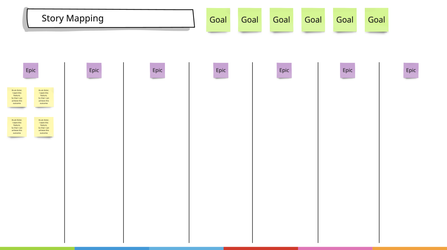
Time Needed: 60 minutes
Copy the goals from activity 3 to the top of the story mapping board.
Map the goals into top level epics, and place one in each area.
Populate enough stories for the first iteration around each epic - they don’t need to be and shouldn’t be complete at this stage.
Add any supplemental stories required, such as to mitigate risks.
Prepare a section of the whiteboard for conveying the “Default” delivery style. Use the table below as a starting point that the attendees can update during the workshop.
Activity
Suggested
Agreed
Iteration length
1 week
Standup time
15 minutes at 9:00 GMT
Demo Time (25 mins)
Thursday 10:00 GMT
Retro Time (45+ mins)
Thursday 11:00 GMT
Planning (45 mins)
Thursday 12:00 GMT
“Steering Co” Time
Every 2 weeks (time to be agreed)
Architecture Iteration Session
Every 3 weeks(Time to be agreed)
Preferred Lunch time
1pm GMT
Backlog Location
Jira/Trello
Document Store
Client System
Product Manager(s)
Client person paired with Product person
Tech Lead
Client person paired with Tech Lead
Chat Comms (including any out of hours comms)
Slack
Learning community
Weekly Lunch & Learn
Out of office Calendar Location
Spreadsheet/Google
Digital Whiteboard
(Shared design whiteboard link, eg Miro)
Pairing
Yes
Cameras at meetings
Yes
Ak Way Engineering Defaults?
Yes
Tool
Suggested
Agreed
Backlog
Trello
Documentation/Wiki
E.g. Confluence
Local Development Environments
Developer Laptops
(assign action to initiate procurement)
Engineer VPN access/Firewall whitelist
Discuss requirements
(Assign action to initiate process)
CI/CD Tool
E.g. Github Actions
(Assign action to onboard team)
Version Control
Github repositories
(Assign Action to onboard team)
Runtime Environment
E.g. On-Prem / Hybrid / Cloud
Dev access
E.g. to AWS dev subscription/resource group
(Assign action to request creation and onboard team)
Pre-Prod
E.g. to AWS dev subscription/resource group
(Assign action to request creation and onboard team)
Prod
E.g. to AWS dev subscription/resource group
(Assign action to request creation and onboard team)
Secrets Management
E.g. AWS Key Management
Domains / DNS
E.g. identify solution hosting domain
(Assign action to request creation and onboard team)
Existing Organisation APIs/System
E.g. on-prem or internal data APIs
(Assign action to request creation and onboard team)
Governance Tooling
E.g. service now change management
(Assign action to request creation and onboard team)
Security Tooling
(Assign action to request creation and onboard team)
Operations tooling
E.g. Service now Service requests
(Assign action to request creation and onboard team)
Alerting/Monitoring tooling
Eg. OpsGenie, NewRelic, PagerDuty (if AWS can be integrated into CloudWatch)
(Assign action to request creation and onboard team)
Mandatory Training
Definition of Ready
Definition of Done
Story discussed in Planning meetings
All tasks have been marked completed
The story has all the Acceptance Criteria defined
All Acceptance criteria have been achieved
The story is prioritised
All commits are tied to the story
The story is estimated
Story Acceptance instructions are defined
The broad story value has been defined
All required infrastructure is in code
Time Needed: 30 minutes
Use this period to agree the “default” ways of working, delivery tools required and definitions of ready and done (DoR/DoD) to be productive from the start. Use the template prepared before the workshop and update wherever appropriate. Allow participants to add missing details relevant to the period.
Assign an action at the end to appropriate people from the delivery team to set up calendar invites for agreed meeting times after the inception.
BEFORE THE WORKSHOP
Prepare a section of the whiteboard to collect feedback about the process. An example is below.
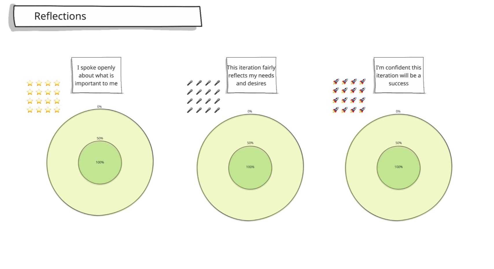
Time Needed: 15 minutes
This is a way for attendees to reflect on the session they have had all day. Ask the attendees to spend a couple of minutes placing an icon in each circle to represent their feelings about each aspect. Use “private mode” settings on tools such as Miro to maintain anonymity.
Give space to discuss, if attendees feel safe sharing, if they have any feedback on the process, and if someone wants to share their thoughts about any off-target votes without necessarily needing to share their vote.
An Inception is a workshop (or series of workshops) designed to get everyone pointing in the same direction. It’s where a team and its stakeholders come together to align on:
We kick off every new initiative with an Inception. For longer-running work, we run a re-inception every 3 months. These refresh sessions make sure the team is still aligned with the big picture and can adapt to changes in context, goals, or scope.
Inceptions are not just about planning. They’re about building shared ownership and confidence across the team.
The delivery team and any supporting roles participate in a weekly planning meeting. It is a chance for the Product people and Customer role to influence the priority for the upcoming iteration.
Iteration Planning ensures the team spends the next cycle working on the highest-value work for the customer today.
In high-collaboration environments where product and customer roles are present daily, this ceremony may become lightweight or even redundant.
However, when customers are less available, iteration planning is the key point to:
Regardless of whether the team works in Scrum, Kanban, or a hybrid approach, iteration planning should involve at least:
Agree on priorities
Check readiness
Size for feasibility, not commitment
Goal: Agree on the most valuable, achievable work for the next iteration.
Large, vague stories slow delivery, increase uncertainty, and hide risks. Small, well-sliced stories enable quicker feedback, easier testing, and faster value delivery.
Story slicing is the practice of breaking large features or epics into the smallest valuable increments that can be designed, built, tested, and released to users. The goal is to deliver value quickly, get feedback early, and reduce the risk of delivering the wrong thing.
Unlike breaking work into technical tasks (e.g., “set up database”), slices should be vertical — cutting through all layers of the system to deliver a usable, testable outcome for the customer.
When a story is too big to deliver within an iteration or sprint, slice it by:
Rule of Thumb: A story should ideally be small enough to complete in a single day, but must be completable in one iteration.
Product Qualities (also called Quality Attributes, System Characteristics, or Architectural Characteristics) describe the measurable qualities and behaviours of a product beyond its core functionality. These qualities are part of the product, not “extras” or “nice-to-haves”, and they directly shape the user experience, system resilience, and maintainability.
By embedding product qualities into user stories, we ensure they are considered during design, development, and testing — not bolted on afterwards. This helps teams deliver software that is not only functional, but reliable, secure, and delightful to use.
The label Non-Functional Requirements is misleading for two main reasons:
Product qualities like performance, security, or accessibility are functional in the sense that they directly affect whether the product works for its intended users. Calling them “non-functional” implies they are optional or secondary, when they are often critical to product success.
Historically, NFRs were treated as a separate checklist after features were built. This created risk, rework, and missed expectations. In modern engineering, product qualities are first-class citizens, embedded into the stories, definition of done, and acceptance criteria from the start.
Using the term product qualities keeps them visible, valued, and integral to delivery.
For every functional user story, define acceptance criteria that capture relevant product qualities.
Example:
As a user, I want to search for products so that I can find what I need quickly.
Product Quality Acceptance Criteria: 95% of search queries return results within 300ms under normal load.
Qualities should be expressed in measurable terms to enable verification.
Good: Page loads in under 1.5 seconds for 90% of users on a 4G connection.
Poor: Page should load quickly.
Qualities should be part of Definition of Ready (DoR) for a story. If they aren’t, the story isn’t ready for development.
Product qualities are as important as functional requirements - they affect user experience and business value.
| Quality Attribute | Example in a User Story |
|---|---|
| Performance | 95% of API calls respond in <250ms under expected peak load. |
| Security | All form inputs are validated server-side; no reflected XSS vulnerabilities detected. |
| Accessibility | Page meets WCAG 2.1 AA criteria; all images have descriptive alt text. |
| Scalability | System supports 10,000 concurrent sessions with <1% error rate. |
| Reliability | 99.95% uptime over rolling 30-day period. |
| Maintainability | New features are implemented without modifying more than 10% of core modules. |
| Usability | User completes onboarding in under 2 minutes without help. |
A user story is a concise, informal description of a feature or capability from the end user’s perspective. It represents a small, deliverable slice of functionality — ideally completed within a day or a single iteration.
User stories are one of several tools for capturing requirements. Alternatives include Use Cases, Event Modelling, and the Jobs-to-be-Done framework.
“A user story is a promise for a conversation” - Alistair CockburnThey are useful in aligning technical and product perspectives, and focusing on the why as well as the what.
User’s perspective Write stories from the end-user’s
point of view using a consistent format:
As a [role] I want to [goal] So that [benefit]
Example: As an account holder, I want to see my account balance so that I know how much money I have.
Acceptance criteria
Balance clarity with brevity
A team board (or kanban board) is a visual representation of the team’s work, laid out as cards in different stages, from backlog to done.
A team board is a tool for making progress visible to everyone involved in the delivery process at any given time. The delivery team ensures that each item on the board accurately represents its actual state. Any team member should be able to look at the board and understand what is in progress and what has been completed. The board helps efficiently conduct alignment meetings, such as Standups and Planning.
The primary purpose of a team board is to make the work visible to everyone on the team and stakeholders. It should be easily accessible and located in a prominent place where team members can see it regularly.
The stories and epics identified in the Inception serve as the first items on the board.
The items that still need to be done must be prioritised based on input from the stakeholders.
A good team board should have a simple, straightforward structure that is easy to understand. It should clearly show the different stages of work, such as Backlog, Ready, In Progress, and Done. Tailor the stages to reflect the team’s specific workflow and processes. Following this structure ensures the board accurately reflects how work flows through the team, making it more effective for tracking progress.
The board should use visual elements like cards to represent individual tasks or user stories. The visualisation helps team members quickly understand each task’s status. In addition to task status, the team board should include relevant information such as task dependencies, blockers, and deadlines.
Everyone is responsible for managing the board’s layout and contents. Therefore, team members must update it regularly to reflect the actual state of work, including moving tasks as they progress, updating task status, and adding new tasks as they appear.
A good team board fosters collaboration by giving everyone a shared view of tasks in progress and their assigned responsibilities.
A good team board is adaptable and can be easily modified to meet the team’s and client’s changing needs. Whether adding new columns or incorporating new information, the team board should be flexible enough to accommodate these changes.
This practice is essential for coordinating daily work, keeping the team aligned, and identifying any potential blockers to delivery.
The standup is a daily meeting for the whole team to discuss their current work and any issues or dependencies they need to resolve (for example, needing help from another team member or another team).
This meeting is often the earliest opportunity to raise concerns about external factors or things beyond the delivery team’s control.
Get everyone on the team to talk about what they’re currently working on by answering the three questions:
Alternatively, because progress should be self-evident from an up-to-date board, another popular format is:
Anti-pattern: The team relies on one person to lead the stand-up and may cancel if they’re absent. Why this matters: This creates fragility and weakens team ownership of the process. Encourage:
Anti-pattern: Stand-ups are frequently moved or skipped to accommodate other meetings. Why this matters: Irregular timing leads to low attendance and undermines the habit and value of the stand-up. Better practice:
Anti-pattern: Team members direct their updates to one person (a manager or stakeholder) instead of addressing the whole team.
Why this matters: This reinforces hierarchy and reduces peer-to-peer coordination. Watch for:
Anti-pattern: No one ever reports a blocker, even in complex or delayed work. Why this matters: Team members either hide blockers, or the environment discourages them from raising issues. Root causes:
Anti-pattern: Team members simply walk through a list of tickets or read out titles. Why this matters: This reduces engagement and hides the real work, complexity, and coordination needs. Fix:
Anti-pattern: Everyone speaks in turn without interaction, questions, or follow-up. Why this matters: This kills collaboration and makes the stand-up a passive status broadcast. Encourage:
Anti-pattern: Updates are purely backward-looking, listing yesterday’s activity. Why this matters: This isn’t useful unless it affects what happens today. The goal is to coordinate forward. Fix:
Anti-pattern: Stand-ups happen without a shared board or visualization of work. Why this matters: Without a shared reference, it’s harder to align, spot issues, or keep flow visible. Fix:
While often used by engineering teams, Retrospectives can be adopted by any group of people who work together in a team towards common goals.
The retrospective (or retro) is the key forum for a team to identify things to improve – this could be ways of working, the quality of the work, team happiness, or anything else. Ideally, what improvements the team identifies should have a measurable impact on the team.
A retro needs a facilitator or a retro-leader to do some prep work before coming into the meeting. As such, it is best to decide the retro-leader ahead of time, such as in a planning meeting or stand-up. Allow 60 minutes for the retro and use a private space where you can post ideas (e.g. a whiteboard software like Miro or Mural). Use timers to control how long you spend on an activity and encourage everybody to talk.
The team review is a regular meeting that allows team members to demonstrate their work. It can also be called a sprint review, a show and tell, or a demo (demonstration).
The whole team should be present to either share or observe the progress made and benefit from this opportunity for visibility. Invite your customers, stakeholders, and other interested parties to see progress and provide feedback.
If your work is part of a larger programme, you may want to open up your review to the rest of the organisation every few weeks.
For teams that have the customer and product people working closely day-to-day, the reviews and feedback happen throughout the iteration, making this event less critical.
In the absence of such close collaboration, a weekly or fortnightly team review session can serve as a frequent checkpoint to demonstrate the flow of value and gather feedback. Feedback shared in these meetings will help define what is the next most valuable thing to work on, and potentially course correct, too.
A regular review gives other teams a chance to see how your work relates to theirs. It also helps hold the team to account, knowing that they must demonstrate adequate progress to stakeholders helps focus the team on delivery of working software, the primary measure of progress.
An information radiator is a prominently visible display of key delivery information, either physical or digital, that keeps the team and stakeholders aligned. It should be clear, concise, and up to date so anyone can understand the state of delivery at a glance.
A team board can serve as an information radiator if it avoids excessive low-level delivery detail and focuses on the most important shared context.
This supports the Team-First and Vision & Empathy pillars of the AK Way: promoting transparency, enabling collaboration, and helping everyone make better delivery decisions.
Following the practices outlined in this manual allows teams to build high-quality, reliable products sustainably. Together, as a strong engineering community, we can drive innovation, deliver value to our customers, and achieve success in our projects and initiatives.
A strong engineering community is essential for building successful products. We can improve product quality, increase reliability, enhance innovation, and ensure sustainability by fostering collaboration, knowledge sharing, and continuous learning. A supportive and inclusive engineering community ensures that our teams are happy, healthy, and productive for the long term.
This section covers a range of good engineering practices and principles proven by decades of industry research and our own experience. By embracing these practices, we can deliver value to our customers more efficiently and effectively while ensuring the quality and reliability of our products.
In addition to guiding current technology adoption, we can’t stand still and always need to keep an eye on the future. We do this by discussing and experimenting with future technology perspectives and sharing ideas. We encourage all team members to contribute their thoughts, ideas, and insights on emerging technologies, industry trends, and innovative solutions. By collaborating and sharing knowledge, we can stay ahead of the curve and continue to deliver cutting-edge solutions to our customers.
This document represents a folder from Guru.
Continuous attention to technical excellence is crucial in driving organisational change. In today’s fast-paced environment, delivering high-quality, reliable software at speed is not just a goal but a necessity for staying competitive and responsive to market demands. Using engineering practices prioritising quality, reliability, and speed, we can meet our users’ evolving needs and drive positive organisational transformation.
Here are some practices we have adopted to meet the evolving customer needs and bring about positive transformation. These practices work because they have a strong basis in the principles we describe later on this page. We use the “Working agreements” stage of an Inception to inform everyone that these are our Engineering defaults. These practices apply to engineers from Armakuni and clients. If our clients have reasons for choosing a different approach, we ask that they outline the alternative practices they’ll use to ensure delivery meets the same standards.
The default practices that we recommend are:
These practices aren’t commandments that people must follow. If we choose any other practices in place of the ones described above, then the new practices must, in principle, be able to produce a similar impact. The underlying tenets of these practices and the effect they have are as follows:
Prioritise quality and reliability throughout the software development lifecycle.
Improve Flow (the ability to produce value continuously) by breaking down silos, generating feedback and introducing a culture of learning to enable faster, more reliable software delivery.
Faster time to market: By automating manual processes, addressing bottlenecks and reducing handoffs, DevOps accelerates the software delivery pipeline, allowing organisations to release new features more quickly.
Break down work into smaller, manageable tasks and iterate quickly based on feedback.
Automate repetitive tasks to accelerate development and reduce errors. Integrate code changes frequently and deploy them rapidly and reliably.
At Armakuni, we use pair programming and teaming (mob programming) to accelerate learning, reduce delivery risk, and improve delivery flow. Pairing ensures knowledge is shared, feedback is immediate, and no individual becomes a bottleneck or single point of failure.
Pair programming is a method where two engineers work on the same code at the same time. One is the driver, actively writing code, while the other is the navigator, reviewing, asking questions, and spotting issues early. Roles switch regularly to keep energy and engagement high.
Teaming extends this to the whole team. One driver codes while the rest act as navigators, offering ideas, spotting problems, and helping shape solutions in real-time. Roles rotate often, so everyone contributes.
“Pairing slows us down.”
It may feel slower for an individual, but for the team, it increases delivery speed by reducing rework, finding defects earlier, and removing handover delays. The net effect is faster, higher-quality delivery. See The Costs and Benefits of Pair Programming
“We don’t need to pair because we trust each other.”
Pairing isn’t about mistrust. It’s about amplifying knowledge sharing, removing single points of failure, and enabling continuous improvement through live feedback. See The GDS Way.
“It’s too expensive to have two (or more) people on the same task.”
The real cost is defects, misaligned solutions, and lost context when key people are unavailable. Pairing is an investment in reducing those risks. See Investigating the Effectiveness of Pair Programming in Industrial Domains
“We’ll get the same benefits from code review.”
Code reviews happen after the fact, when context may already be lost and rework is more costly. Pairing provides real-time review and collaborative problem-solving. See Exploring the benefits of pair reviewing in code reviews
“Not all work needs two people.”
True, pairing is most valuable for complex, high-risk, or business-critical work. Part of the skill is knowing when to pair, when to mob, and when solo work is fine.
“Introverts won’t like it.”
Pairing can be adapted to suit different communication styles. Agree on working rhythms, take regular breaks, and rotate partners to keep energy sustainable.
“It only works in person.”
With the right tools and discipline, remote pairing can be equally effective. We’ve successfully done this at Armakuni across multiple distributed client teams.
Version control, also known as source control or revision control, is a system that records changes to files over time. It allows developers to track modifications to code, documents, and other files, enabling collaboration, code review, and the management of different versions of a project.
Anyone who works with source control, eg, engineers, engineering managers, content authors.
1. Get Access to a Git Hosting Environment
Version control works by using a hosting platform (like GitHub or Azure DevOps) where your code or files are stored and managed. Depending on the organisation setup you may have to request access to the appropriate platform.
2. Install Git on Your Local Machine
Git is a command-line tool that you run locally to interact with your remote repository.
3. Learn the Basics of Git & GitHub
You don’t need to be a Git expert to get started—but learning a few key concepts will make your workflow much smoother:
Recommended learning resource: Git & GitHub for Beginners – FreeCodeCamp Guide
4. Try It Yourself
Once you have access and Git installed:
This hands-on practice is the best way to build confidence with version control.
Static code analysis is a practice for examining source code without running it, to detect errors, bugs, vulnerabilities, and deviations from agreed coding standards. We use it to improve code quality, consistency, and maintainability, while reducing delivery and security risks.
Using it enables early detection of issues, helps apply consistent coding conventions across teams, and reduces governance overhead through automated checks.
“It slows us down.”
Early detection reduces rework, meaning less time fixing production defects later.
“We trust our developers, we don’t need it.”
This isn’t about trust. It’s about catching human error and ensuring consistency across the whole codebase.
“It’s only for big teams.”
Small teams also benefit, especially when scaling or onboarding new engineers.
Category
JavaScript / Node.js
Python
C# / .NET
Java
PHP
Linters
ESLint, JSHint
Flake8, Pylint
StyleCop, Roslyn analysers
Checkstyle, PMD
PHP_CodeSniffer, PHPMD
Code quality analysers
SonarQube, Plato
Radon
SonarQube, NDepend
SonarQube, SpotBugs
SonarQube, PHPStan
Security analysers
npm audit, Retire.js, OWASP Dependency-Check
Bandit, Safety
Microsoft Security Code Analysis, OWASP ZAP
FindSecBugs, OWASP Dependency-Check
RIPS, Psalm, OWASP Dependency-Check
Code formatters
Prettier, StandardJS
Black, autopep8
Roslyn analysers, dotnet format
Google Java Format, Spotless
PHP-CS-Fixer, phpcbf
Type checkers
TypeScript, Flow
MyPy, Pyright
Built-in compile-time type checking
Built-in compile-time type checking
Psalm, PHPStan
Dependency analysers
npm audit, Snyk, Retire.js
pip-audit, Safety
NuGet tooling, OWASP Dependency-Check
Maven Dependency Plugin, Gradle Versions Plugin, OWASP Dependency-Check
Composer Audit, Snyk, OWASP Dependency-Check
Coverage analysers
Istanbul/NYC, Jest coverage
coverage.py
dotCover, Coverlet
JaCoCo, Cobertura
PHPUnit Code Coverage, Xdebug
Performance analysers
Chrome DevTools Performance tab, Lighthouse
Py-Spy, cProfile
PerfView, dotTrace
VisualVM, JProfiler, YourKit
Xdebug profiler, Blackfire.io
Test Driven Development (TDD) is a software development approach where developers write tests for new code before writing the code itself. By writing tests first, developers can ensure that code meets requirements, performs as expected, and is easy to maintain and refactor.
Engineering teams looking to improve code quality, reduce bugs, and increase confidence. Businesses who want to save potentially millions by detecting bugs early in the process.
A pre-requisite for TDD is familiarity with the programming language you are using and basic knowledge of a testing framework, e.g. what are assertions and how to use them in the language you selected.
Understand the basics
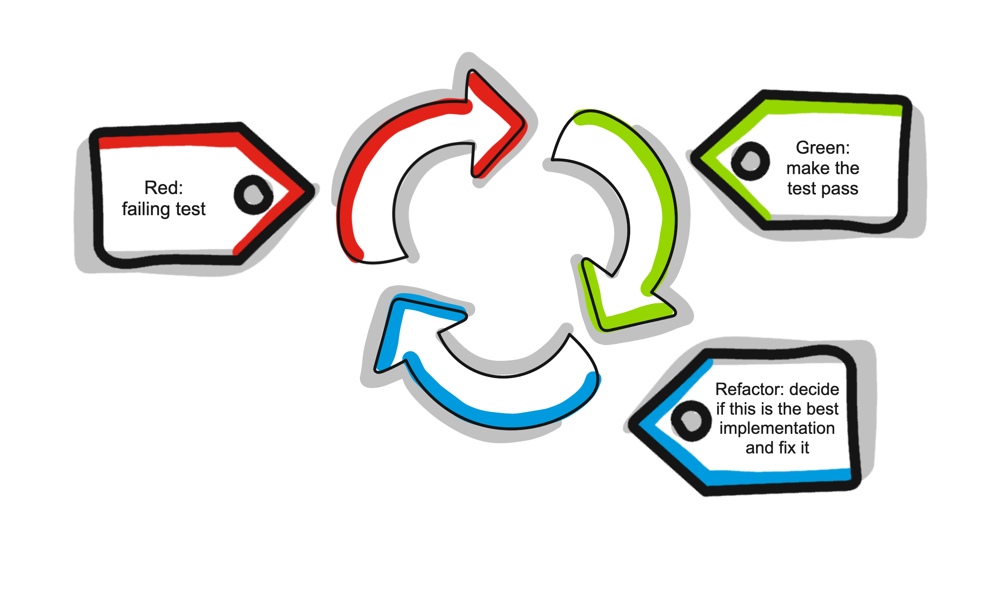
Write Effective Tests
Test-Driven Design
Advanced TDD Techniques
Zen Mastery
Trunk-Based Development (TBD) is a software development approach where all developers work on a single branch, known as the “trunk” or “mainline.” Instead of creating feature branches that diverge from the main codebase for an extended period, developers work on short-lived branches and merge their changes back into the trunk frequently. This approach facilitates rapid integration and early detection of conflicts, promotes collaboration and reduces integration issues.
Engineering teams who are struggling with long running pull requests that are hard to merge and require constant re-work.
Before you get started with trunk-based development, your team needs to establish a code review protocol, because this will replace Pull Requests in your system. The best way to get started is to start pair programming as that gives your team instant code reviews as two developers are working simultaneously.
The second thing you need for trunk-based development to work is CI / CD pipelines that can run your tests as soon as you push your code to the main branch, and the build terminates at broken tests and skips deploying a broken build to any environment.
The third thing to focus on is pushing small sized changes. Small changes are more likely to pass the build and will have lower chances of any bugs. If possible, run the test suite locally to avoid revert commits.
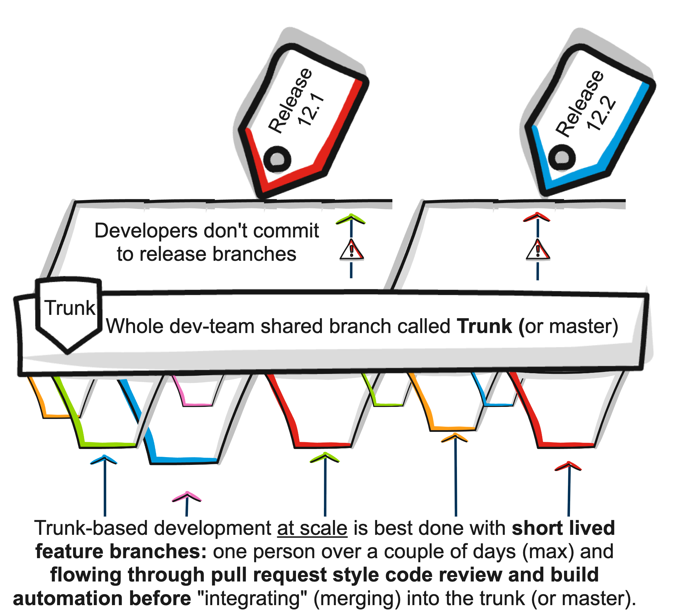
https://trunkbaseddevelopment.com/
Code reviews, also known as peer reviews or walkthroughs, are a software development practice where one or more developers review code written by another developer. The primary goal of code reviews is to ensure code quality, identify defects, and improve collaboration within the development team. Our experience and studies have proven that this is not always the case. We’ve also come across governance processes in regulated environments that mandate code reviews to reduce risk by ensuring that no software should be release without a review. Note that the same objective can be met if the teams follow Pair Programming and build rigorous checks into their CI pipelines as the norm with the added advantage of faster feedback.
To be clear we strongly advise against code reviews unless absolutely necessary due to organisational constraints.
Engineering teams that are unable to use Pair Programming will find Code reviews useful. In such cases, the code change must always be reviewed before merging into the main trunk even if this introduces a delay in delivery.
Define clear guidelines and expectations for code reviews, including what should be reviewed, how reviews should be conducted, and who should participate, who is allowed to merge.
This functionality is built in all Version control systems that will allow the change author to ask for reviews, and the reviewer will be able to view and comment on the changes.
Assign one or more reviewers to each code review, ensuring that reviews are conducted by developers with relevant expertise and contextual knowledge.
Review the code changes thoroughly, focusing on readability, maintainability, performance, and adherence to coding standards. Provide constructive feedback, suggestions, and recommendations for improvement.
Address the comments and feedback provided during the code review, making necessary changes and improvements to the code.
Once all review comments have been addressed, mark the code review as complete and proceed with merging the code changes into the main branch.
Note that most of these anti-patterns can be avoided when teams adopt Pair Programming.
Code reviews help us:
The goal is not perfection, it’s progress. Working code now is better than perfect code later.
More guidance on code reviews can be found in Google Engineering Practices: Code Review Guide& Github: How to write the perfect pull request.
This practice supports delivering value quickly, reducing risk, and maintaining high quality through automation and fast feedback.
Level
CI/CD Stage
Characteristics
Risks & Limitations
AK Way Focus
1
Ad-hoc Integration
Code merged irregularly, manual builds, no standardised test process. Deployments are manual and infrequent.
High integration risk, long lead times, high defect rate.
Establish shared repo, start automated build.
2
Basic CI
Code is merged daily or more, automated builds are triggered on commit, and basic unit tests run.
Tests may be incomplete, and deployments may still be manual.
Add test coverage, ensure fast build times, fix builds immediately.
3
Automated CI
Builds include unit + integration tests, static code analysis, and security scans. Build status is visible to all.
Still reliant on manual or semi-manual deployment steps.
Expand automated checks, integrate artefact storage.
4
Continuous Delivery
Fully automated pipeline to create deployable artefacts. Multiple test environments. Business controls release timing.
Risk of drift between test and prod environments.
Use IaC to keep environments consistent, prioritise deployability.
5
Continuous Deployment
Every passing pipeline auto-deploys to production. Feature toggles and blue/green/canary releases reduce risk.
Requires strong monitoring and rollback capability.
Embed production monitoring, automate rollback, and use safe rollout patterns.
6
Progressive Delivery
Continuous deployment plus targeted rollouts, automated impact analysis, and rapid feature rollback.
Requires mature observability and release governance.
Integrate observability signals into deploy decisions and run post-release reviews.
A walking skeleton is a minimal implementation of a system that includes just enough functionality to be deployed, integrated, and tested end-to-end. It provides a basic architectural structure for the project, allowing developers to build upon it incrementally.
It helps delivery teams starting out new projects to reduce the risk from delivery by uncovering blockers to releasing sooner and validating architecture early in the development process.
Identify the first essential feature with end-to-end functionality that demonstrates the flow of data through the system. Eg, a dashboard with a single widget showing a single database entry fetched from a real database table.
Use Infrastructure as Code (IaC) to set up the basic building blocks in the destination hosting environment of your choice. Make a basic CI/CD pipeline with only the stages that can test and deploy the application and the infrastructure. The goal is to have the basic setup running in production.
Perform the integration tests in production environment to prove that functionality works as expected.
Once the walking skeleton is in place, continue to build upon it incrementally, adding new features and functionality in small, iterative cycles.
IaC manages and provisions infrastructure through code, not click-ops. Definitions are versioned, testable, and automated, which makes environments reproducible and safer to change.
Engineering and platform teams that want consistent, auditable environments, faster delivery, and lower operational risk. Security and governance teams benefit from policy as code, traceability, and drift detection.
Cloud agnostic, AWS-leaning - We work across AWS, Azure, and GCP. We prefer AWS, where clients are flexible, and use native services when they create real leverage. We use multi-cloud tools when portability or standardisation matters.
Choose the right level of abstraction - Use cloud-native definitions for deep integration and service velocity. Use multi-cloud frameworks when standard workflows, reuse, or portability are the priority. Make that trade-off explicit.
Open source first, licence aware - HashiCorp changed Terraform’s licence to BUSL. For a truly open option, we use OpenTofu. We will still use Terraform where appropriate and allowed. Be explicit about the implications in client proposals.
Pipelines, not laptops - Plans and applies run in CI with approvals, not from a developer machine. Every change is reviewed, tested, and traceable.
Guardrails by default - Remote state with locking, least-privilege IAM, policy as code, tagging standards, drift detection, and cost visibility. No snowflakes.
Use what fits the client’s platform strategy, team skills, and compliance needs.
“Why not Terraform everywhere?”
BUSL limits pure open use. OpenTofu provides an open fork. We will use Terraform where licences and client standards allow, and OpenTofu when openness matters.
“Why not always use cloud-native?”
Native gives deep integration, but can lock you in. When portability, consistency, or team skills trump depth, use OpenTofu, Pulumi, or Crossplane.
“How do we keep teams safe?”
CI-only applies, least-privilege roles, policy checks in the pipeline, drift detection, and small, reversible changes.
We apply the same test-first mindset to infrastructure as we do to application code. TDD with IaC reduces deployment risk, catches misconfigurations early, and ensures our infrastructure changes are safe, intentional, and repeatable.
Test in Production (TiP) is a software testing approach that involves running tests against a live production environment. Unlike traditional testing methods that rely on pre-production environments, TiP allows teams to validate system behaviour, performance, and reliability in real-world conditions.
This helps the product teams, customer representatives, and QA team validate the system in real-world scenarios. This reduces the need for distinct “lower” environments like QA, UAT etc. This makes the delivery process faster and reduces the effort and money spent on making these lower environments look like production.
Identify test scenarios
Production testing in your real production system is all about studying, making improvements, and informing your choices with the most up-to-date and accurate data available, after the code has already gone through the regular deployment process. This assumes that a lot of functionality would have been tested via automated tests in the deployment pipeline. So the focus for testing in production is critical functionality, performance, and reliability.
Feature Flags
Feature flags or toggles allow you to test the behaviour in production without rolling it out to end users by providing a control to enable and disable it.
Gradual Rollout
Techniques like canary releases or blue-green deployment can allow the production traffic to be rolled out to a small percentage of users at a time. This allows you to test and gather data about the new behaviours before deciding to direct 100% of traffic to it. A similar behaviour can also be provided by some feature flag tools that support traffic segmentation without complicating the deployment strategy.
Observability
Utilise monitoring and observability to collect and analyse data from the production environment, including performance metrics, error rates, and user behaviour.
Shift Left Security means building security in from the start, not bolting it on at the end. We integrate security testing, tooling, and threat modelling into the earliest stages of the software delivery lifecycle (SDLC), so vulnerabilities are found and fixed before they can be exploited.
This enables secure-by-default delivery, fast feedback, and shared responsibility between engineering and security teams.
Integrate tools across multiple categories for full coverage:
Category
Purpose
Example Tools
SAST (Static Application Security Testing)
Scan the code for vulnerabilities before it runs
SonarQube, Roslyn Security Analysers (C#), Bandit (Python), ESLint security plugins (JS), Checkov (Terraform/Bicep)
DAST (Dynamic Application Security Testing)
Test running applications for exploitable flaws
OWASP ZAP, Burp Suite
SCA (Software Composition Analysis)
Check dependencies and containers for known CVEs
OWASP Dependency-Check, Snyk, Trivy
CSPM (Cloud Security Posture Management)
Monitor and enforce security baselines in the cloud
AWS Security Hub, AWS Config, Prowler (AWS), Prisma Cloud, OpenSCAP
We apply test-first thinking to security requirements, ensuring they’re codified and verified before features ship. This makes security measurable, automatable, and part of normal development rather than an afterthought.
Every software project relies on dependencies: third-party libraries, frameworks, modules, and packaged services. If not tracked and managed consistently, these dependencies can make deploying and operating production systems fragile, unpredictable, and hard to maintain.
Managing dependencies well improves delivery flow, reduces security risks, increases team confidence, and ensures reproducible builds across environments.
We apply a test-first mindset to dependency management, making dependency requirements, security rules, and compatibility checks executable and automated. This ensures that dependency changes are safe, intentional, and compliant before they reach production.
Observability is the ability to understand the internal state of a system based on its external outputs. In practice, this means being able to answer questions about system behaviour, performance, and health without deploying new code.
For modern, cloud-native systems made up of microservices, containers, and distributed infrastructure, failures often arise from application errors or complex service interactions rather than hardware. Observability helps teams detect, understand, and resolve these issues faster.
We focus on building systems that are transparent, diagnosable, and capable of delivering fast feedback for continuous improvement.
We approach observability in five stages:
Logs are a key observability signal when structured and enriched with context.
Three log entries for the same API show response times increasing from 0.07s → 1.3s → 2.0s. While the API is still returning 200 OK, the pattern points to a performance degradation worth investigating.
Plain string logs are harder to parse and analyse at scale. Structured logs use key–value pairs, often in JSON, to make logs machine-readable and queryable.
Example:
{` "date":"Sep 27 16:13:16"`` "endpoint": "armakuni.tk-learning.ak-raindrops"`` "some-other-data": "bb62be68-7829-44f6-ac88-ccc1eed010e7/[RTR/6]: ak-raindrops-fearless-kookaburra.cfapps.io - [2018-09-27T23:13:15.242+0000]"`` "operation": "GET /period/10 HTTP/1.1"`` "response-code": 200`` "some-value": 0`` "transferred": 52`` "response-body": "-"`` "agent": "Mozilla/5.0 (Macintosh; Intel Mac OS X 10_14_0) AppleWebKit/537.36 (KHTML, like Gecko) Chrome/69.0.3497.100 Safari/537.36"`` "some-ip""10.10.66.49:58376"`` "some-other-ip": "10.10.149.233:61086"`` "x_forwarded_for": ["86.159.227.161", "10.10.66.49"]`` "x_forwarded_proto":"http"`` "vcap_request_id":"b5174259-5823-4dbf-7608-4745c418a5d2"`` "response_time": 0.070358043`` "app_id": "bb62be68-7829-44f6-ac88-ccc1eed010e7"`` "app_index": "0"`` "x_b3_traceid":"9728e528008bee29"`` "x_b3_spanid":"9728e528008bee29"`` "x_b3_parentspanid":"-"`}Benefits:
Governance at Armakuni refers to the framework, processes, and guidelines that ensure and enable delivery to align with organisational goals, adhere to regulations and standards, and operate efficiently and effectively.
Governance remains a focal point throughout every phase of product delivery. It encompasses time management, budgetary constraints, scope definition, quality assurance, and regulatory compliance.
We cultivate a culture in which teams actively embed governance principles, fostering a unified understanding and accountability across the organisation. This approach enables us to harness our delivery teams’ collective intelligence and creativity, driving agility, resilience, and innovation in our culture and products.
Our governance framework empowers individuals and teams to exercise informed decision-making and take ownership of their contributions within the broader governance structure.
Here’s how it works:
We forge a sense of ownership over governance practices and principles by empowering the delivery teams with the knowledge, skills, and resources they need to make decisions and deliver autonomously, including providing training, access to relevant information, and fostering a culture of accountability and responsibility.
Bottom-up governance encourages collaborative decision-making rather than imposing decisions from the top down. It involves giving all delivery team members a voice in shaping policies, practices, and standards through regular retrospectives, team meetings, and cross-functional collaboration to ensure governance structures remain responsive to the teams’ needs and realities.
We recognise that requirements and technology solutions constantly evolve, and our governance processes must evolve with them. Adopting flexible governance processes ensures that our governance practices remain relevant and practical, enabling us to respond quickly to emerging challenges and opportunities. This iterative governance approach allows us to continuously improve and refine our practices.
Effective governance relies on transparent communication channels that facilitate the flow of information throughout the organisation. This helps identify risks and plan mitigations, ensure feedback reaches the right audience in time, and helps the decision-making process be effective and well understood.
At Armakuni, we foster a culture of continuous learning and improvement. Teams are encouraged to reflect on past experiences, learn from mistakes, and actively contribute to refining governance mechanisms over time. This could involve post-mortem analyses, knowledge-sharing sessions, and regular retrospectives to identify areas for enhancement and optimisation.
This section outlines the fundamental considerations that underpin governance at Armakuni. Each element is essential in ensuring comprehensive governance throughout the organisation and every stage of the product delivery lifecycle.
Ensure that team activities align with the organisation’s strategic objectives and mission. Governance helps teams focus efforts by defining and measuring outcomes, while delivery teams foster a culture of autonomously delivering value in the best way possible.
Use the Inception process to define and manage scope at kick-off and then at regular intervals to prevent scope creep and ensure deliverables align with stakeholder expectations.
The delivery methodology considers timeliness a core principle. It regularly engages with stakeholders and customers throughout the process. The delivery will always focus on the most critical milestone first and allow for responding to change when needed.
Integrate engineering and delivery practices with automated quality assurance measures to ensure quality remains a whole-team activity. By adopting these into the delivery process, we empower every team member to contribute to maintaining high standards. This approach enhances the efficiency of our delivery process and fosters a culture of quality ownership across the entire team.
We foster effective communication and collaboration among all stakeholders and the delivery team to ensure alignment and transparency. We engage stakeholders at every level, providing relevant oversight and regulation compliance information. Our collaborative oversight approach fosters open communication and a blame-free culture. It empowers our engineering capability to report openly and flag issues promptly, ultimately minimising risks for successful delivery.
First and foremost, we never refer to people as resources.
Ensure that the right people are engaged with any initiative and everyone involved has understood their roles and responsibilities. Proper protocols are in place when the need for more people arises, drawing on our vendor staffing model to optimise each delivery team for suitability and effectiveness.
Identify, assess, and mitigate engagement delivery risks, including technical risks, personnel constraints, and external dependencies.
For example, implementing a process for assessing workload across the engineering capability, which informs what work is accepted within teams, helps to manage capacity and cognitive load and, in turn, prevents burnout and other risks to effective delivery.
We prioritise adherence to applicable laws, regulations, and industry standards throughout our product development process. We integrate regulatory requirements into our delivery cycle wherever possible, utilising automated tests to ensure adherence to regulations consistently. We incorporate tests into build pipelines that detect non-compliance early in the process, effectively shifting left.
Maintain accurate documentation of engagement requirements, decisions, and progress and provide regular updates and reports to stakeholders.
We want to ensure that our governance processes enable our organisation’s strategic decision-making process. The processes should produce information and artefacts that keep engagements aligned with our strategic objectives. The decision-makers should have access to all the essential data at the appropriate time to facilitate this.
We understand that delivering the best value for our customers involves frequently adapting to evolving requirements. As we gain insights and learn more, changing the engagement scope can lead to a better product. By proactively managing change, the delivery team is better able to deliver high-quality products that meet and exceed customer expectations.
Integrate security and privacy considerations into the design and development process to safeguard sensitive data and mitigate cybersecurity risks. We consistently ensure compliance with security thresholds by utilising Secure by Design principles and automated security testing.
Risk management is the practice of identifying, assessing, and mitigating potential issues that could affect delivery outcomes. In delivery work, risks can’t be fully eliminated, but they can be understood, prioritised, and addressed at the right time to avoid unnecessary impact.
Traditional risk management treats risk as a static document, a register produced at project start and rarely revisited. This approach often misses emerging risks and delays mitigation until it is too late.
Our approach to risk management treats risk as work in progress: visible, prioritised, and addressed continuously, just like features or technical tasks.
A RACI matrix is a tool you can use to support governance and delivery, providing a pre-agreed framework for ensuring defined roles and responsibilities. It stands for Responsible, Accountable, Consulted, and Informed. The matrix helps identify who is responsible for tasks, who is accountable for their completion, who needs to be consulted, and who needs to be kept informed.
For any delivery team and their stakeholders, a RACI can prevent ambiguity and preempt any conflicts. It is the responsibility of everyone involved in the team to ensure that the RACI is accurately generated with involvement from everyone listed within the RACI, and for the tasks in the matrix to reflect a realistic strategy.
RACI matrices are a popular tool that have a lightweight structure and can provide useful information at a glance. For example, it’s quick to check if there are any tasks or deliverables in the RACI that have no one ‘Accountable’, and therefore flag that this is an issue. It also helps to provide a baseline of expectations that the team can reference, in case there is any breakdown of understanding about their roles and responsibilities.
The involvement of various stakeholders in the RACI process is important for its effectiveness. Once the Project Sponsors have identified the teams, the team can then collaborate to build the RACI, ensuring transparency and accountability of roles across the delivery team and broader stakeholder relationships. This collaborative approach ensures clarity and minimises conflicts or ambiguities throughout the work.
A RACI log will look like a table with this format:
Task/Activity
Name or Role
Name or Role
Name or Role
Name or Role
Task 1
Task 2
Task 3
Task 4
You can fill each cell with one of these:
Here’s how you might fill it out for a data governance process:
Task / Activity
Data Steward
Data Owner
Data Governance Team
Project Team
Compliance team
IT
QA
Security
Data Inventory
R
A
C
I
I
C
Data Classification
R
A
C
I
C
Data Quality Assessment
R
A
C
I
C
C
Data Access Controls
R
C
I
I
R
C
Data Lifecycle Management
R
A
C
I
I
C
A holistic approach to software delivery that embraces continuous learning, feedback, and evolution. At Armakuni, this reflects our blend of agile, XP, lean, and DevOps practices to deliver value rapidly and sustainably.
Armakuni’s shared approach to engineering and consulting, grounded in vision, empathy, team-first thinking, and modern engineering practices. It represents a collection of rational defaults that outline the principles, values, and standards for delivering client and internal engagements. The AK Way serves as a guardrail for sustainable success, ensuring shared understanding, effective collaboration, and clear feedback loops.
A strategic lens for transforming delivery by focusing on optimising for flow, learning, and outcomes, not just outputs.
A domain-driven design concept used to clearly define the responsibilities and language of a particular part of the system. This is essential in reducing cognitive load and enabling autonomous teams.
The mental effort required to perform a task. We aim to optimise teams’ cognitive load to ensure sustainable delivery and high performance.
Partnering with clients to build capability through collaboration, co-creation, and coaching - not just delivering outputs.
The practice of frequently integrating code changes into a shared repository, typically multiple times a day. An automated build and test suite verifies each integration to detect errors early and reduce integration issues.
An extension of Continuous Integration that ensures code is always in a deployable state. It involves automating the release process so that software can be safely and reliably released to production at any time, often requiring a manual approval step.
The next step beyond Continuous Delivery is Continuous Deployment, where every change that passes automated tests is automatically deployed to production without manual intervention. This enables rapid iteration and real-time delivery of value to users.
An ongoing process of gaining knowledge, skills, and insights through feedback, experimentation, and reflection. At Armakuni, continuous learning is embedded in how we work with individuals, teams, and organisations, constantly adapting based on outcomes, evidence, and emerging practices.
A commitment to prioritising the needs and satisfaction of customers in all business practices and product development efforts.
A structured approach to software delivery that emphasises values such as individual interactions, working software, customer collaboration, and responsiveness to change.
A cornerstone of our approach, it involves understanding others’ contexts, constraints, and goals. Critical for both internal collaboration and client success.
The smooth and continuous delivery of value. Optimised by reducing handoffs, blockers, and batch sizes, it is core to our delivery mindset.
A paved, opinionated route through tooling or delivery practices that provides a safe, efficient path while allowing deviation if needed.
The framework of oversight and control designed to ensure that projects adhere to established standards and guidelines while allowing teams to operate with autonomy.
A product and engineering approach where we test assumptions and measure outcomes rather than simply delivering requirements.
A focused, collaborative discovery phase at the start of an engagement or initiative. Its purpose is to align the team and stakeholders on vision, goals, constraints, risks, scope, and ways of working. Inceptions typically include activities such as user story mapping, stakeholder interviews, technical exploration, and team chartering. The goal is to create shared understanding and set a strong foundation for delivery.
The practice of managing and provisioning computing infrastructure through machine-readable scripts, rather than through manual processes.
Applying open source principles within an organisation to encourage reuse, collaboration, and quality.
The practice of continuous improvement through small, incremental changes is a mindset we encourage in all engagements.
A modern management approach focusing on fast feedback, validated learning, and decentralised decision-making.
A governance approach that is lightweight and flexible, providing necessary oversight without hindering the delivery process.
A set of practices including CI/CD, trunk-based development, test automation, infrastructure as code, and observability - core to the AK Way.
Encouraging transparent and effective communication among team members to foster collaboration and innovation.
Prioritising business impact and user value over sheer volume of deliverables. Central to our product-led and coaching ethos.
A way of embedding change and capability by working alongside clients, coaching in context rather than instructing from the sidelines.
Building shared capabilities that reduce friction, enable self-service, and accelerate delivery across teams.
Creating and improving products by understanding and addressing user needs and stakeholder requirements.
An approach emphasising understanding user needs and stakeholder requirements to create solutions tailored to real-world challenges. Involves user focus and clear outcomes.
The degree of excellence in products and services ensures they meet or exceed customer expectations.
Speaking truth with care. Encouraging feedback, retrospectives, and leadership to create psychological safety and clarity.
The practice of integrating security measures early in the software development lifecycle to identify and address vulnerabilities sooner.
Understanding that software systems are deeply intertwined with the people and teams that build and use them. Design should consider both.
A lightweight artefact defining a team’s purpose, boundaries, responsibilities, and ways of working, enhancing clarity and discoverability.
A model we use to shape team structures and interactions based on cognitive load and flow. Includes stream-aligned, enabling, complicated-subsystem, and platform teams.
Understanding the constraints, context, and trade-offs of a technical system - even when you’re not the one building it.
A learner-centred, brain-based approach to training that prioritises active participation, collaboration, and experiential learning. Rather than relying on lectures, this method uses activities, reflection, and dialogue to help participants internalise concepts. It encourages facilitators to act as guides rather than instructors, empowering learners to discover and apply knowledge themselves.
The end-to-end flow of work that delivers value to a customer. We map, measure, and improve value streams to focus delivery efforts.
The core principles that guide behaviour and decision-making within the organisation. This includes excellence, customer-centricity, and open communication.
Ensuring that everyone, from teams to stakeholders, shares a clear understanding of purpose, direction, and desired outcomes.
Regular, lightweight updates, written weekly, that reflect on a team’s or an individual’s progress, learnings, challenges, and focus areas. Weeknotes promote transparency, encourage reflection, and help maintain alignment across distributed and fast-moving teams. At Armakuni, they are used to support asynchronous communication and a culture of openness.
We are committed to working openly. In that spirit, we share this document with everyone to promote transparency in working together effectively. The following audiences will find it helpful.
This manual is a go-to resource for navigating our delivery processes and methodologies and creating consistency in our approach.
By understanding our approach, clients gain valuable insights into our operations and how we value transparency and alignment at all delivery stages.
The manual serves as a guide for new hires joining Armakuni. It helps them understand our working methods and gain insights into our culture, values, mindset, and approach.
It offers a deep understanding of our approach, capabilities, and commitment to excellence, helping you make informed decisions about working with us.
Add the article as a card in the AK Way collection in Guru. Place it in the correct folder.
Once published, it will automatically appear on The AK Way site via Guru WebHooks and GitHub Actions.
The number at the start of the title controls its position in the navigation. Drag-and-drop order in Guru is ignored.
01 - First Article 02 - Second ArticleWhen adding a article, think about where it sits the in the flow of work eg. pairing comes before version control, which comes before TTD
01 - Pairing `02 - Version Control `03 - TDDIf you want to add subpages to split things up, then you can use decimal numbering:
02 - User Stories `02.01 - Story Slicing `02.03 - Even More Advanced TopicGatsby will detect the numbering at build time and generate navigation accordingly.
Here’s a list of articles that still need to be written.
Here’s a list of features for the Ak Way site